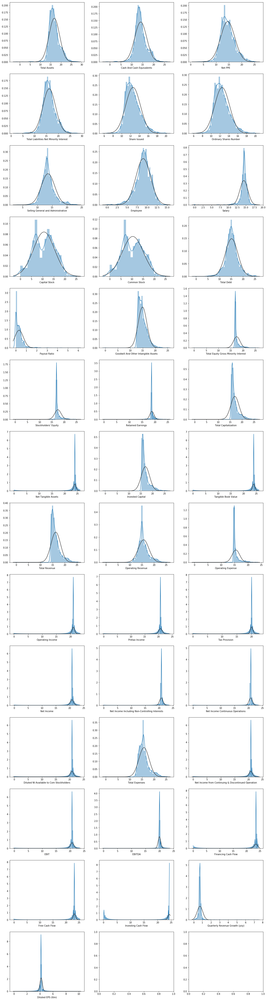

# Import packages
from selenium import webdriver
from webdriver_manager.chrome import ChromeDriverManager
import pandas as pd
from bs4 import BeautifulSoup
import re
import string
import pandas as pd
import time
pd.options.display.float_format = '{:.0f}'.formatEstimating market capitalisation of companies using Machine Learning models
One of the main challenges of asset management in finance is to develop models that can predict stock prices, or in other words, the market capitalization of a company (numbers of stocks x stock prices). Market capitalisation can be seen as the overall value of the company. Usually, investors use a method called DCF (Discounted Cash Flow) to predict the value of the company. In a few words, this method consists in predicting the future revenues of the company and discount it to get the present value of the company. This method is very demanding and need many assumptions concerning the company, the different rates you want to use, etc.
The goal of my project is to try to develop a machine learning model to estimate the current market capitalisation using only the latest statistics of the company.
1. Data Collection
I collected the dataset by webscrapping. The source of the data is the website yahoo finance (https://finance.yahoo.com/). Yahoo finance is one the main website that retrieves financial data.
Data are extracted for the year 2020 (snapshot).
My datapoints are 3000 important US companies (such as Apple, Amazon, Google, etc.). The features can be divided into 6 parts: * (1) Balance sheet * (2) Cash flow statement * (3) Income statement * (4) ESG data * (5) Profile of the company * (6) Basic statistics of the company
Import packages
Ticker list
Example: https://finance.yahoo.com/quote/AAPL/balance-sheet?p=AAPL
BS
# List of features to extract
list_BS = ['Total Assets',
'Current Assets',
'Cash, Cash Equivalents & Short Term Investments',
'Cash And Cash Equivalents',
'Cash',
'Cash Equivalents',
'Other Short Term Investments',
'Receivables',
'Accounts receivable',
'Gross Accounts Receivable',
'Allowance For Doubtful Accounts Receivable',
'Other Receivables',
'Inventory',
'Other Current Assets',
'Total non-current assets',
'Net PPE',
'Gross PPE',
'Properties',
'Land And Improvements',
'Machinery Furniture Equipment',
'Leases',
'Accumulated Depreciation',
'Goodwill And Other Intangible Assets',
'Goodwill',
'Other Intangible Assets',
'Investments And Advances',
'Investment in Financial Assets',
'Available for Sale Securities',
'Other Non Current Assets',
'Total Liabilities Net Minority Interest',
'Current Liabilities',
'Payables And Accrued Expenses',
'Payables',
'Accounts Payable',
'Current Accrued Expenses',
'Current Debt And Capital Lease Obligation',
'Current Debt',
'Commercial Paper',
'Other Current Borrowings',
'Current Deferred Liabilities',
'Current Deferred Revenue',
'Other Current Liabilities',
'Total Non Current Liabilities Net Minority Interest',
'Long Term Debt And Capital Lease Obligation',
'Long Term Debt',
'Non Current Deferred Liabilities',
'Non Current Deferred Taxes Liabilities',
'Non Current Deferred Revenue',
'Tradeand Other Payables Non Current',
'Other Non Current Liabilities',
'Total Equity Gross Minority Interest',
"Stockholders' Equity",
'Capital Stock',
'Common Stock',
'Retained Earnings',
'Gains Losses Not Affecting Retained Earnings',
'Total Capitalization',
'Common Stock Equity',
'Net Tangible Assets',
'Working Capital',
'Invested Capital',
'Tangible Book Value',
'Total Debt',
'Net Debt',
'Share Issued',
'Ordinary Shares Number']
list_BS_asdf = pd.DataFrame(list_BS)for i in range(0,1):
try:
# I had to create a temporary dataframe to store the values. Otherwise, impossible to merge 3000 companies with different features.
Temporary_BS = pd.DataFrame(index=range(150),columns=range(2))
driver = webdriver.Chrome(ChromeDriverManager().install())
# Change the URL
is_link = 'https://finance.yahoo.com/quote/' + ticker[i] +'/balance-sheet?p=' + ticker[i]
driver.get(is_link)
time.sleep(1)
# Click on the expand button
link1 = driver.find_element_by_xpath('//*[@id="Col1-1-Financials-Proxy"]/section/div[2]/button/div')
link1.click()
time.sleep(1)
html = driver.execute_script('return document.body.innerHTML;')
soup = BeautifulSoup(html,'lxml')
# Get features
features_BS = soup.find_all('div', class_='Ta(c) Py(6px) Bxz(bb) BdB Bdc($seperatorColor) Miw(120px) Miw(140px)--pnclg D(tbc)')
# Get values
features_BS_bis = soup.find_all('span', class_='Va(m)')
# To manage the ads
if features_BS_bis[0].text != 'Total Assets':
features_BS_bis = features_BS_bis[1:]
if len(soup.find_all('div', class_='Ta(c) Py(6px) Bxz(bb) BdB Bdc($seperatorColor) Miw(120px) Miw(140px)--pnclg D(ib) Fw(b)')) + len(soup.find_all('div', class_='Ta(c) Py(6px) Bxz(bb) BdB Bdc($seperatorColor) Miw(120px) Miw(140px)--pnclg D(ib) Fw(b) Bgc($lv1BgColor)')) == 5 :
j = 0
for j in range(0,len(features_BS),3):
n=int(j/3)
Temporary_BS.iloc[n,1] = features_BS[j].text
t = 0
for t in range(0,len(features_BS_bis)):
Temporary_BS.iloc[t,0] = features_BS_bis[t].text
Temporary_BS = Temporary_BS.merge(list_BS_asdf,how='right')
Temporary_BS.set_index(0,inplace=True)
BS.loc[:,ticker[i]] = Temporary_BS.loc[sorted(Temporary_BS.index.to_list(), key=BS.index.to_list().index),:][1].values
elif len(soup.find_all('div', class_='Ta(c) Py(6px) Bxz(bb) BdB Bdc($seperatorColor) Miw(120px) Miw(140px)--pnclg D(ib) Fw(b)')) + len(soup.find_all('div', class_='Ta(c) Py(6px) Bxz(bb) BdB Bdc($seperatorColor) Miw(120px) Miw(140px)--pnclg D(ib) Fw(b) Bgc($lv1BgColor)')) == 3 or len(soup.find_all('div', class_='Ta(c) Py(6px) Bxz(bb) BdB Bdc($seperatorColor) Miw(120px) Miw(140px)--pnclg D(ib) Fw(b)')) + len(soup.find_all('div', class_='Ta(c) Py(6px) Bxz(bb) BdB Bdc($seperatorColor) Miw(120px) Miw(140px)--pnclg D(ib) Fw(b) Bgc($lv1BgColor)')) == 4:
j = 0
for j in range(0,len(features_BS),2):
n=int(j/2)
Temporary_BS.iloc[n,1] = features_BS[j].text
t = 0
for t in range(0,len(features_BS_bis)):
Temporary_BS.iloc[t,0] = features_BS_bis[t].text
Temporary_BS = Temporary_BS.merge(list_BS_asdf,how='right')
Temporary_BS.set_index(0,inplace=True)
BS.loc[:,ticker[i]] = Temporary_BS.loc[sorted(Temporary_BS.index.to_list(), key=BS.index.to_list().index),:][1].values
elif len(soup.find_all('div', class_='Ta(c) Py(6px) Bxz(bb) BdB Bdc($seperatorColor) Miw(120px) Miw(140px)--pnclg D(ib) Fw(b)')) + len(soup.find_all('div', class_='Ta(c) Py(6px) Bxz(bb) BdB Bdc($seperatorColor) Miw(120px) Miw(140px)--pnclg D(ib) Fw(b) Bgc($lv1BgColor)')) == 1 or len(soup.find_all('div', class_='Ta(c) Py(6px) Bxz(bb) BdB Bdc($seperatorColor) Miw(120px) Miw(140px)--pnclg D(ib) Fw(b)')) + len(soup.find_all('div', class_='Ta(c) Py(6px) Bxz(bb) BdB Bdc($seperatorColor) Miw(120px) Miw(140px)--pnclg D(ib) Fw(b) Bgc($lv1BgColor)')) == 2 :
j = 0
for j in range(0,len(features_BS),1):
n=int(j/1)
Temporary_BS.iloc[n,1] = features_BS[j].text
t = 0
for t in range(0,len(features_BS_bis)):
Temporary_BS.iloc[t,0] = features_BS_bis[t].text
Temporary_BS = Temporary_BS.merge(list_BS_asdf,how='right')
Temporary_BS.set_index(0,inplace=True)
BS.loc[:,ticker[i]] = Temporary_BS.loc[sorted(Temporary_BS.index.to_list(), key=BS.index.to_list().index),:][1].values
elif len(soup.find_all('div', class_='Ta(c) Py(6px) Bxz(bb) BdB Bdc($seperatorColor) Miw(120px) Miw(140px)--pnclg D(ib) Fw(b)')) + len(soup.find_all('div', class_='Ta(c) Py(6px) Bxz(bb) BdB Bdc($seperatorColor) Miw(120px) Miw(140px)--pnclg D(ib) Fw(b) Bgc($lv1BgColor)')) == 5 :
j = 0
for j in range(0,len(features_BS),3):
n=int(j/3)
Temporary_BS.iloc[n,1] = features_BS[j].text
t = 0
for t in range(0,len(features_BS_bis)):
Temporary_BS.iloc[t,0] = features_BS_bis[t].text
Temporary_BS = Temporary_BS.merge(list_BS_asdf,how='right')
Temporary_BS.set_index(0,inplace=True)
BS.loc[:,ticker[i]] = Temporary_BS.loc[sorted(Temporary_BS.index.to_list(), key=BS.index.to_list().index),:][1].values
elif len(soup.find_all('div', class_='Ta(c) Py(6px) Bxz(bb) BdB Bdc($seperatorColor) Miw(120px) Miw(140px)--pnclg D(ib) Fw(b)')) + len(soup.find_all('div', class_='Ta(c) Py(6px) Bxz(bb) BdB Bdc($seperatorColor) Miw(120px) Miw(140px)--pnclg D(ib) Fw(b) Bgc($lv1BgColor)')) == 3 or len(soup.find_all('div', class_='Ta(c) Py(6px) Bxz(bb) BdB Bdc($seperatorColor) Miw(120px) Miw(140px)--pnclg D(ib) Fw(b)')) + len(soup.find_all('div', class_='Ta(c) Py(6px) Bxz(bb) BdB Bdc($seperatorColor) Miw(120px) Miw(140px)--pnclg D(ib) Fw(b) Bgc($lv1BgColor)')) == 4:
j = 0
for j in range(0,len(features_BS),2):
n=int(j/2)
Temporary_BS.iloc[n,1] = features_BS[j].text
t = 0
for t in range(0,len(features_BS_bis)):
Temporary_BS.iloc[t,0] = features_BS_bis[t].text
Temporary_BS = Temporary_BS.merge(list_BS_asdf,how='right')
Temporary_BS.set_index(0,inplace=True)
BS.loc[:,ticker[i]] = Temporary_BS.loc[sorted(Temporary_BS.index.to_list(), key=BS.index.to_list().index),:][1].values
elif len(soup.find_all('div', class_='Ta(c) Py(6px) Bxz(bb) BdB Bdc($seperatorColor) Miw(120px) Miw(140px)--pnclg D(ib) Fw(b)')) + len(soup.find_all('div', class_='Ta(c) Py(6px) Bxz(bb) BdB Bdc($seperatorColor) Miw(120px) Miw(140px)--pnclg D(ib) Fw(b) Bgc($lv1BgColor)')) == 1 or len(soup.find_all('div', class_='Ta(c) Py(6px) Bxz(bb) BdB Bdc($seperatorColor) Miw(120px) Miw(140px)--pnclg D(ib) Fw(b)')) + len(soup.find_all('div', class_='Ta(c) Py(6px) Bxz(bb) BdB Bdc($seperatorColor) Miw(120px) Miw(140px)--pnclg D(ib) Fw(b) Bgc($lv1BgColor)')) == 2 :
j = 0
for j in range(0,len(features_BS),1):
n=int(j/1)
Temporary_BS.iloc[n,1] = features_BS[j].text
t = 0
for t in range(0,len(features_BS_bis)):
Temporary_BS.iloc[t,0] = features_BS_bis[t].text
Temporary_BS = Temporary_BS.merge(list_BS_asdf,how='right')
Temporary_BS.set_index(0,inplace=True)
BS.loc[:,ticker[i]] = Temporary_BS.loc[sorted(Temporary_BS.index.to_list(), key=BS.index.to_list().index),:][1].values
except:
continue
driver.close()Cash Flow
list_CF = ['Operating Cash Flow',
'Cash Flow from Continuing Operating Activities',
'Net Income from Continuing Operations',
'Depreciation Amortization Depletion',
'Depreciation & amortization',
'Deferred Tax',
'Deferred Income Tax',
'Stock based compensation',
'Other non-cash items',
'Change in working capital',
'Change in Receivables',
'Changes in Account Receivables',
'Change in Inventory',
'Change in Payables And Accrued Expense',
'Change in Payable',
'Change in Account Payable',
'Change in Other Current Assets',
'Change in Other Current Liabilities',
'Change in Other Working Capital',
'Investing Cash Flow',
'Cash Flow from Continuing Investing Activities',
'Net PPE Purchase And Sale',
'Purchase of PPE',
'Net Intangibles Purchase And Sale',
'Purchase of Intangibles',
'Net Business Purchase And Sale',
'Purchase of Business',
'Net Investment Purchase And Sale',
'Purchase of Investment',
'Sale of Investment',
'Net Other Investing Changes',
'Financing Cash Flow',
'Cash Flow from Continuing Financing Activities',
'Net Issuance Payments of Debt',
'Net Long Term Debt Issuance',
'Long Term Debt Issuance',
'Long Term Debt Payments',
'Net Short Term Debt Issuance',
'Short Term Debt Payments',
'Net Common Stock Issuance',
'Common Stock Issuance',
'Common Stock Payments',
'Cash Dividends Paid',
'Common Stock Dividend Paid',
'Net Other Financing Charges',
'End Cash Position',
'Changes in Cash',
'Beginning Cash Position',
'Income Tax Paid Supplemental Data',
'Interest Paid Supplemental Data',
'Capital Expenditure',
'Issuance of Capital Stock',
'Issuance of Debt',
'Repayment of Debt',
'Repurchase of Capital Stock',
'Free Cash Flow']
list_CF_asdf = pd.DataFrame(list_CF)for i in range(0,1):
try:
Temporary_CF = pd.DataFrame(index=range(150),columns=range(2))
driver = webdriver.Chrome(ChromeDriverManager().install())
is_link = 'https://finance.yahoo.com/quote/' + ticker[i] +'/cash-flow?p=' + ticker[i]
driver.get(is_link)
time.sleep(1)
link1 = driver.find_element_by_xpath('//*[@id="Col1-1-Financials-Proxy"]/section/div[2]/button/div')
link1.click()
time.sleep(1)
html = driver.execute_script('return document.body.innerHTML;')
soup = BeautifulSoup(html,'lxml')
features_CF = soup.find_all('div', class_='Ta(c) Py(6px) Bxz(bb) BdB Bdc($seperatorColor) Miw(120px) Miw(140px)--pnclg Bgc($lv1BgColor) fi-row:h_Bgc($hoverBgColor) D(tbc)')
features_CF_bis = soup.find_all('span', class_='Va(m)')
if features_CF_bis[0].text != 'Operating Cash Flow':
features_CF_bis = features_CF_bis[1:]
if len(soup.find_all('div', class_='Ta(c) Py(6px) Bxz(bb) BdB Bdc($seperatorColor) Miw(120px) Miw(140px)--pnclg D(ib) Fw(b)')) + len(soup.find_all('div', class_='Ta(c) Py(6px) Bxz(bb) BdB Bdc($seperatorColor) Miw(120px) Miw(140px)--pnclg D(ib) Fw(b) Bgc($lv1BgColor)')) == 4:
j = 0
for j in range(0,len(features_CF),3):
n=int(j/3)
Temporary_CF.iloc[n,1] = features_CF[j].text
t = 0
for t in range(0,len(features_CF_bis)):
Temporary_CF.iloc[t,0] = features_CF_bis[t].text
Temporary_CF = Temporary_CF.merge(list_CF_asdf,how='right')
Temporary_CF.set_index(0,inplace=True)
CF.loc[:,ticker[i]] = Temporary_CF.loc[sorted(Temporary_CF.index.to_list(), key=CF.index.to_list().index),:][1].values
elif len(soup.find_all('div', class_='Ta(c) Py(6px) Bxz(bb) BdB Bdc($seperatorColor) Miw(120px) Miw(140px)--pnclg D(ib) Fw(b)')) + len(soup.find_all('div', class_='Ta(c) Py(6px) Bxz(bb) BdB Bdc($seperatorColor) Miw(120px) Miw(140px)--pnclg D(ib) Fw(b) Bgc($lv1BgColor)')) == (2 or 3):
j = 0
for j in range(0,len(features_CF),2):
n=int(j/2)
Temporary_CF.iloc[n,1] = features_CF[j].text
t = 0
for t in range(0,len(features_CF_bis)):
Temporary_CF.iloc[t,0] = features_CF_bis[t].text
Temporary_CF = Temporary_CF.merge(list_CF_asdf,how='right')
Temporary_CF.set_index(0,inplace=True)
CF.loc[:,ticker[i]] = Temporary_CF.loc[sorted(Temporary_CF.index.to_list(), key=CF.index.to_list().index),:][1].values
elif len(soup.find_all('div', class_='Ta(c) Py(6px) Bxz(bb) BdB Bdc($seperatorColor) Miw(120px) Miw(140px)--pnclg D(ib) Fw(b)')) + len(soup.find_all('div', class_='Ta(c) Py(6px) Bxz(bb) BdB Bdc($seperatorColor) Miw(120px) Miw(140px)--pnclg D(ib) Fw(b) Bgc($lv1BgColor)')) == (1 or 0):
j = 0
for j in range(0,len(features_CF),1):
n=int(j/1)
Temporary_CF.iloc[n,1] = features_CF[j].text
t = 0
for t in range(0,len(features_CF_bis)):
Temporary_CF.iloc[t,0] = features_CF_bis[t].text
Temporary_CF = Temporary_CF.merge(list_CF_asdf,how='right')
Temporary_CF.set_index(0,inplace=True)
CF.loc[:,ticker[i]] = Temporary_CF.loc[sorted(Temporary_CF.index.to_list(), key=CF.index.to_list().index),:][1].values
elif len(soup.find_all('div', class_='Ta(c) Py(6px) Bxz(bb) BdB Bdc($seperatorColor) Miw(120px) Miw(140px)--pnclg D(ib) Fw(b)')) + len(soup.find_all('div', class_='Ta(c) Py(6px) Bxz(bb) BdB Bdc($seperatorColor) Miw(120px) Miw(140px)--pnclg D(ib) Fw(b) Bgc($lv1BgColor)')) == 4:
j = 0
for j in range(0,len(features_CF),3):
n=int(j/3)
Temporary_CF.iloc[n,1] = features_CF[j].text
t = 0
for t in range(0,len(features_CF_bis)):
Temporary_CF.iloc[t,0] = features_CF_bis[t].text
Temporary_CF = Temporary_CF.merge(list_CF_asdf,how='right')
Temporary_CF.set_index(0,inplace=True)
CF.loc[:,ticker[i]] = Temporary_CF.loc[sorted(Temporary_CF.index.to_list(), key=CF.index.to_list().index),:][1].values
elif len(soup.find_all('div', class_='Ta(c) Py(6px) Bxz(bb) BdB Bdc($seperatorColor) Miw(120px) Miw(140px)--pnclg D(ib) Fw(b)')) + len(soup.find_all('div', class_='Ta(c) Py(6px) Bxz(bb) BdB Bdc($seperatorColor) Miw(120px) Miw(140px)--pnclg D(ib) Fw(b) Bgc($lv1BgColor)')) == (2 or 3):
j = 0
for j in range(0,len(features_CF),2):
n=int(j/2)
Temporary_CF.iloc[n,1] = features_CF[j].text
t = 0
for t in range(0,len(features_CF_bis)):
Temporary_CF.iloc[t,0] = features_CF_bis[t].text
Temporary_CF = Temporary_CF.merge(list_CF_asdf,how='right')
Temporary_CF.set_index(0,inplace=True)
CF.loc[:,ticker[i]] = Temporary_CF.loc[sorted(Temporary_CF.index.to_list(), key=CF.index.to_list().index),:][1].values
elif len(soup.find_all('div', class_='Ta(c) Py(6px) Bxz(bb) BdB Bdc($seperatorColor) Miw(120px) Miw(140px)--pnclg D(ib) Fw(b)')) + len(soup.find_all('div', class_='Ta(c) Py(6px) Bxz(bb) BdB Bdc($seperatorColor) Miw(120px) Miw(140px)--pnclg D(ib) Fw(b) Bgc($lv1BgColor)')) == (1 or 0):
j = 0
for j in range(0,len(features_CF),1):
n=int(j/1)
Temporary_CF.iloc[n,1] = features_CF[j].text
t = 0
for t in range(0,len(features_CF_bis)):
Temporary_CF.iloc[t,0] = features_CF_bis[t].text
Temporary_CF = Temporary_CF.merge(list_CF_asdf,how='right')
Temporary_CF.set_index(0,inplace=True)
CF.loc[:,ticker[i]] = Temporary_CF.loc[sorted(Temporary_CF.index.to_list(), key=CF.index.to_list().index),:][1].values
except:
continue
driver.close()ESG
for i in range(0,len(ticker)):
driver = webdriver.Chrome(ChromeDriverManager().install())
is_link = 'https://finance.yahoo.com/quote/' + ticker[i] +'/sustainability?p=' + ticker[i]
driver.get(is_link)
time.sleep(1)
html = driver.execute_script('return document.body.innerHTML;')
soup = BeautifulSoup(html,'lxml')
try:
ESG.iloc[0,i] = soup.find('div',class_='Fz(36px) Fw(600) D(ib) Mend(5px)').text
ESG.iloc[1,i] = soup.find_all('div',class_='D(ib) Fz(23px) smartphone_Fz(22px) Fw(600)')[0].text
ESG.iloc[2,i] = soup.find_all('div',class_='D(ib) Fz(23px) smartphone_Fz(22px) Fw(600)')[1].text
ESG.iloc[3,i] = soup.find_all('div',class_='D(ib) Fz(23px) smartphone_Fz(22px) Fw(600)')[2].text
ESG.iloc[4,i] = soup.find('div',class_='D(ib) Fz(36px) Fw(500)').text
ESG = ESG.rename(columns={i: ticker[i]})
driver.close()
except:
driver.close()
continue
ESG = ESG.rename( index={0: 'ESG',1: 'E',2: 'S',3: 'G',4: 'Controverse'})Income statement
list_IS = ['Total Revenue',
'Operating Revenue',
'Cost of Revenue',
'Gross Profit',
'Operating Expense',
'Selling General and Administrative',
'Research & Development',
'Operating Income',
'Net Non Operating Interest Income Expense',
'Interest Income Non Operating',
'Interest Expense Non Operating',
'Other Income Expense',
'Other Non Operating Income Expenses',
'Pretax Income',
'Tax Provision',
'Net Income Common Stockholders',
'Net Income',
'Net Income Including Non-Controlling Interests',
'Net Income Continuous Operations',
'Diluted NI Available to Com Stockholders',
'Basic EPS',
'Diluted EPS',
'Basic Average Shares',
'Diluted Average Shares',
'Total Operating Income as Reported',
'Total Expenses',
'Net Income from Continuing & Discontinued Operation',
'Normalized Income',
'Interest Income',
'Interest Expense',
'Net Interest Income',
'EBIT',
'EBITDA',
'Reconciled Cost of Revenue',
'Reconciled Depreciation',
'Net Income from Continuing Operation Net Minority Interest',
'Normalized EBITDA',
'Tax Rate for Calcs',
'Tax Effect of Unusual Items']
list_IS_asdf = pd.DataFrame(list_IS)for i in range(0,len(ticker)):
try:
Temporary_IS = pd.DataFrame(index=range(150),columns=range(2))
driver = webdriver.Chrome(ChromeDriverManager().install())
is_link = 'https://finance.yahoo.com/quote/' + ticker[i] +'/financials?p=' + ticker[i]
driver.get(is_link)
time.sleep(1)
link1 = driver.find_element_by_xpath('//*[@id="Col1-1-Financials-Proxy"]/section/div[2]/button/div')
link1.click()
time.sleep(1)
html = driver.execute_script('return document.body.innerHTML;')
soup = BeautifulSoup(html,'lxml')
features_IS_bis = soup.find_all('span', class_='Va(m)')
if features_IS_bis[0].text != 'Total Revenue':
features_IS_bis = features_IS_bis[1:]
if len(soup.find_all('div', class_='Ta(c) Py(6px) Bxz(bb) BdB Bdc($seperatorColor) Miw(120px) Miw(140px)--pnclg D(ib) Fw(b)')) + len(soup.find_all('div', class_='Ta(c) Py(6px) Bxz(bb) BdB Bdc($seperatorColor) Miw(120px) Miw(140px)--pnclg D(ib) Fw(b) Bgc($lv1BgColor)')) == 3:
features_IS = soup.find_all('div', class_='Ta(c) Py(6px) Bxz(bb) BdB Bdc($seperatorColor) Miw(120px) Miw(140px)--pnclg Bgc($lv1BgColor) fi-row:h_Bgc($hoverBgColor) D(tbc)')
features_IS_bis = soup.find_all('span', class_='Va(m)')
j = 0
for j in range(0,len(features_IS),2):
m=int(j/2)
Temporary_IS.iloc[m,1] = features_IS[j].text
t = 0
for t in range(0,len(features_IS_bis)):
Temporary_IS.iloc[t,0] = features_IS_bis[t].text
Temporary_IS = Temporary_IS.merge(list_IS_asdf,how='right')
Temporary_IS.set_index(0,inplace=True)
IS.loc[:,ticker[i]] = Temporary_IS.loc[sorted(Temporary_IS.index.to_list(), key=IS.index.to_list().index),:][1].values
elif len(soup.find_all('div', class_='Ta(c) Py(6px) Bxz(bb) BdB Bdc($seperatorColor) Miw(120px) Miw(140px)--pnclg D(ib) Fw(b)')) + len(soup.find_all('div', class_='Ta(c) Py(6px) Bxz(bb) BdB Bdc($seperatorColor) Miw(120px) Miw(140px)--pnclg D(ib) Fw(b) Bgc($lv1BgColor)')) == 4:
features_IS = soup.find_all('div', class_='Ta(c) Py(6px) Bxz(bb) BdB Bdc($seperatorColor) Miw(120px) Miw(140px)--pnclg Bgc($lv1BgColor) fi-row:h_Bgc($hoverBgColor) D(tbc)')
features_IS_bis = soup.find_all('span', class_='Va(m)')
j = 0
for j in range(0,len(features_IS),3):
m=int(j/3)
Temporary_IS.iloc[m,1] = features_IS[j].text
t = 0
for t in range(0,len(features_IS_bis)):
Temporary_IS.iloc[t,0] = features_IS_bis[t].text
Temporary_IS = Temporary_IS.merge(list_IS_asdf,how='right')
Temporary_IS.set_index(0,inplace=True)
IS.loc[:,ticker[i]] = Temporary_IS.loc[sorted(Temporary_IS.index.to_list(), key=IS.index.to_list().index),:][1].values
elif len(soup.find_all('div', class_='Ta(c) Py(6px) Bxz(bb) BdB Bdc($seperatorColor) Miw(120px) Miw(140px)--pnclg D(ib) Fw(b)')) + len(soup.find_all('div', class_='Ta(c) Py(6px) Bxz(bb) BdB Bdc($seperatorColor) Miw(120px) Miw(140px)--pnclg D(ib) Fw(b) Bgc($lv1BgColor)')) == 3:
features_IS = soup.find_all('div', class_='Ta(c) Py(6px) Bxz(bb) BdB Bdc($seperatorColor) Miw(120px) Miw(140px)--pnclg Bgc($lv1BgColor) fi-row:h_Bgc($hoverBgColor) D(tbc)')
features_IS_bis = soup.find_all('span', class_='Va(m)')
j = 0
for j in range(0,len(features_IS),2):
m=int(j/2)
Temporary_IS.iloc[m,1] = features_IS[j].text
t = 0
for t in range(0,len(features_IS_bis)):
Temporary_IS.iloc[t,0] = features_IS_bis[t].text
Temporary_IS = Temporary_IS.merge(list_IS_asdf,how='right')
Temporary_IS.set_index(0,inplace=True)
IS.loc[:,ticker[i]] = Temporary_IS.loc[sorted(Temporary_IS.index.to_list(), key=IS.index.to_list().index),:][1].values
elif len(soup.find_all('div', class_='Ta(c) Py(6px) Bxz(bb) BdB Bdc($seperatorColor) Miw(120px) Miw(140px)--pnclg D(ib) Fw(b)')) + len(soup.find_all('div', class_='Ta(c) Py(6px) Bxz(bb) BdB Bdc($seperatorColor) Miw(120px) Miw(140px)--pnclg D(ib) Fw(b) Bgc($lv1BgColor)')) == 4:
features_IS = soup.find_all('div', class_='Ta(c) Py(6px) Bxz(bb) BdB Bdc($seperatorColor) Miw(120px) Miw(140px)--pnclg Bgc($lv1BgColor) fi-row:h_Bgc($hoverBgColor) D(tbc)')
features_IS_bis = soup.find_all('span', class_='Va(m)')
j = 0
for j in range(0,len(features_IS),3):
m=int(j/3)
Temporary_IS.iloc[m,1] = features_IS[j].text
t = 0
for t in range(0,len(features_IS_bis)):
Temporary_IS.iloc[t,0] = features_IS_bis[t].text
Temporary_IS = Temporary_IS.merge(list_IS_asdf,how='right')
Temporary_IS.set_index(0,inplace=True)
IS.loc[:,ticker[i]] = Temporary_IS.loc[sorted(Temporary_IS.index.to_list(), key=IS.index.to_list().index),:][1].values
except:
continue
driver.close()Statistics
list_i=[]
i=0
driver = webdriver.Chrome(ChromeDriverManager().install())
is_link = 'https://finance.yahoo.com/quote/' + ticker[i] +'/key-statistics?p=' + ticker[i]
driver.get(is_link)
html = driver.execute_script('return document.body.innerHTML;')
soup = BeautifulSoup(html,'lxml')
features_stats = soup.find_all('td',class_='Pos(st)')
t = 0
for t in range(0,len(features_stats)):
list_i.append(features_stats[t].text )i = 0
for i in range(0,len(ticker)):
try:
driver = webdriver.Chrome(ChromeDriverManager().install())
is_link = 'https://finance.yahoo.com/quote/' + ticker[i] +'/key-statistics?p=' + ticker[i]
driver.get(is_link)
time.sleep(1)
html = driver.execute_script('return document.body.innerHTML;')
soup = BeautifulSoup(html,'lxml')
features_stats = soup.find_all('td',class_='Fw(500) Ta(end) Pstart(10px) Miw(60px)')
j = 0
for j in range(0,len(features_stats)):
Stats.iloc[j,i] = features_stats[j].text
except:
continue
driver.close()Profile
i = 0
for i in range(0,len(ticker)):
driver = webdriver.Chrome(ChromeDriverManager().install())
is_link = 'https://finance.yahoo.com/quote/' + ticker[i] +'/profile?p=' + ticker[i]
driver.get(is_link)
time.sleep(1)
html = driver.execute_script('return document.body.innerHTML;')
soup = BeautifulSoup(html,'lxml')
try:
Profile.iloc[0,i] = soup.find_all('span',class_='Fw(600)')[0].text
Profile.iloc[2,i] = soup.find_all('span',class_='Fw(600)')[2].text
Profile.iloc[3,i] = soup.find_all('td',class_='Ta(end)')[0].text
Profile= Profile.rename(columns={i: ticker[i]})
except:
continue
driver.close()
Profile = Profile.rename( index={0: 'Sector',1: 'Employee',2: 'Salary'})2. Data Preparation
- Data cleaning and manipulation
- Variables pre-selection
- Missing values
- Features engineering
- Features encoding
- Correlation matrix
- Data split
- Outliers
- Check for inconsistencies
a) Data Cleaning
During the proposal, I found easier and less messy to clean my data datasets by datasets.
Features variables:
Balance sheet
I also replace commas and ‘-’ symbol by nothing. It is very important to distinguish the case where ‘-’ is used to indicate ‘no value available’ and the case where ‘-’ is simply a negative value. In order to do that, I use the following regex expression [-]$.
I need to replace the nan values by nothing.
I apply the function created above to my dataframe.
Here a small sample of the balance sheet dataframe:
| AAPL | MSFT | AMZN | USB-PA | GOOGL | GOOG | FB | TCTZF | TCEHY | TSLA | ... | NSHBY | STKL | FGROF | HRTX | MSC | MTZXF | CODI | CASH | FINN | LMNX | |
|---|---|---|---|---|---|---|---|---|---|---|---|---|---|---|---|---|---|---|---|---|---|
| Index | |||||||||||||||||||||
| Total Assets | 323888000.0 | 301311000.0 | 321195000.0 | 553905000.0 | 319616000.0 | 319616000.0 | 159316000.0 | 1333425000.0 | 1333425000.0 | 52148000.0 | ... | 581204000.0 | 585615.0 | 8343900.0 | 353556.0 | 3043897.0 | 2598518.0 | 6092074.0 | 825463.0 | ||
| Current Assets | 143713000.0 | 181915000.0 | 132733000.0 | 174296000.0 | 174296000.0 | 75670000.0 | 317647000.0 | 317647000.0 | 26717000.0 | ... | 292258000.0 | 249323.0 | 2118800.0 | 314196.0 | 607821.0 | 708367.0 | 509031.0 |
2 rows × 3000 columns
Income statement
I need to delete commas for the Employee variable and be sure that this variable contains only numerical character. In order to do that, I use the following regex expression [^0-9].
I need to replace the nan values by nothing.
I apply the function created above to my dataframe.
Here a small sample of the balance sheet dataframe:
| AAPL | MSFT | AMZN | USB-PA | GOOGL | GOOG | FB | TCTZF | TCEHY | TSLA | ... | NSHBY | STKL | FGROF | HRTX | MSC | MTZXF | CODI | CASH | FINN | LMNX | |
|---|---|---|---|---|---|---|---|---|---|---|---|---|---|---|---|---|---|---|---|---|---|
| Index | |||||||||||||||||||||
| Total Assets | 323888000.0 | 301311000.0 | 321195000.0 | 553905000.0 | 319616000.0 | 319616000.0 | 159316000.0 | 1333425000.0 | 1333425000.0 | 52148000.0 | ... | 581204000.0 | 585615.0 | 8343900.0 | 353556.0 | 3043897.0 | 2598518.0 | 6092074.0 | 825463.0 | ||
| Current Assets | 143713000.0 | 181915000.0 | 132733000.0 | 174296000.0 | 174296000.0 | 75670000.0 | 317647000.0 | 317647000.0 | 26717000.0 | ... | 292258000.0 | 249323.0 | 2118800.0 | 314196.0 | 607821.0 | 708367.0 | 509031.0 |
2 rows × 3000 columns
Income statement
I need to delete commas for the Employee variable and be sure that this variable contains only numerical character. In order to do that, I use the following regex expression [^0-9].
As before, I have to replace ‘M’ and ‘k’ by their numeric conversions (x1’000’000 and x1’000).
# Numeric conversion
for i in range(0,Profile.shape[1]):
if '' in Profile.iloc[2,i]:
pass
if 'M' in Profile.iloc[2,i]:
Profile.iloc[2,i] = Profile.iloc[2,i].replace('M','')
Profile.iloc[2,i] = float(Profile.iloc[2,i])
Profile.iloc[2,i] = Profile.iloc[2,i]*1000000
elif 'k' in Profile.iloc[2,i]:
Profile.iloc[2,i] = Profile.iloc[2,i].replace('k','')
Profile.iloc[2,i] = float(Profile.iloc[2,i])
Profile.iloc[2,i] = Profile.iloc[2,i]*1000
else:
passHere a small sample of the profile dataframe:
| AAPL | MSFT | AMZN | USB-PA | GOOGL | GOOG | FB | TCTZF | TCEHY | TSLA | ... | NSHBY | STKL | FGROF | HRTX | MSC | MTZXF | CODI | CASH | FINN | LMNX | |
|---|---|---|---|---|---|---|---|---|---|---|---|---|---|---|---|---|---|---|---|---|---|
| Index | |||||||||||||||||||||
| Sector | Technology | Technology | Consumer Cyclical | Communication Services | Communication Services | Communication Services | Communication Services | Communication Services | Consumer Cyclical | ... | Industrials | Consumer Defensive | Industrials | Healthcare | Consumer Cyclical | Lawyer: How Jen Shah's 'Real Housewives' money... | Industrials | Ficial Services | Ficial Services | Healthcare | |
| Employee | 147000 | 163000 | 1298000 | 135301 | 135301 | 58604 | 85858 | 85858 | 70757 | ... | 21725 | 1451 | 112394 | 223 | 3924 | 4362 | 1038 | 1325 | |||
| Salary | 1.477e+07 | 1.36e+07 | 1.68e+06 | 4.01e+06 | 4.01e+06 | 2.342e+07 | 7.1e+06 | 7.1e+06 | 23760 | ... | 906030 | 1.02e+06 | 954110 | 0.00 | 982410 | 1.86e+06 | 969520 | 1.36e+06 |
3 rows × 3000 columns
Statistics
I check the features in order to do a first subset features selection:
Index
Market Cap (intraday) 5 2.12T
Enterprise Value 3 2.15T
Trailing P/E 34.23
Forward P/E 1 26.85
PEG Ratio (5 yr expected) 1 1.84
Price/Sales (ttm) 7.20
Price/Book (mrq) 32.07
Enterprise Value/Revenue 3 7.31
Enterprise Value/EBITDA 6 25.23
Beta (5Y Monthly) 1.22
52-Week Change 3 NaN
S&P500 52-Week Change 3 NaN
52 Week High 3 145.09
52 Week Low 3 64.75
50-Day Moving Average 3 123.31
200-Day Moving Average 3 123.35
Avg Vol (3 month) 3 109.22M
Avg Vol (10 day) 3 89.94M
Shares Outstanding 5 16.79B
Float 16.77B
% Held by Insiders 1 0.08%
% Held by Institutions 1 59.79%
Shares Short (Mar 14, 2021) 4 107.01M
Short Ratio (Mar 14, 2021) 4 0.89
Short % of Float (Mar 14, 2021) 4 0.64%
Short % of Shares Outstanding (Mar 14, 2021) 4 0.64%
Shares Short (prior month Feb 11, 2021) 4 88.33M
Forward Annual Dividend Rate 4 0.82
Forward Annual Dividend Yield 4 0.65%
Trailing Annual Dividend Rate 3 0.81
Trailing Annual Dividend Yield 3 0.64%
5 Year Average Dividend Yield 4 1.39
Payout Ratio 4 21.77%
Dividend Date 3 Feb 10, 2021
Ex-Dividend Date 4 Feb 04, 2021
Last Split Factor 2 4:1
Last Split Date 3 Aug 30, 2020
Fiscal Year Ends Sep 25, 2020
Most Recent Quarter (mrq) Dec 25, 2020
Profit Margin 21.74%
Operating Margin (ttm) 25.25%
Return on Assets (ttm) 13.36%
Return on Equity (ttm) 82.09%
Revenue (ttm) 294.14B
Revenue Per Share (ttm) 17.13
Quarterly Revenue Growth (yoy) 21.40%
Gross Profit (ttm) 104.96B
EBITDA 85.16B
Net Income Avi to Common (ttm) 63.93B
Diluted EPS (ttm) 3.69
Quarterly Earnings Growth (yoy) 29.30%
Total Cash (mrq) 76.83B
Total Cash Per Share (mrq) 4.58
Total Debt (mrq) 112.04B
Total Debt/Equity (mrq) 169.19
Current Ratio (mrq) 1.16
Book Value Per Share (mrq) 3.94
Operating Cash Flow (ttm) 88.92B
Levered Free Cash Flow (ttm) 66.89B
Name: AAPL, dtype: objectI am interested in the following features:
I rename corectly the variables.
| AAPL | MSFT | AMZN | USB-PA | GOOGL | GOOG | FB | TCTZF | TCEHY | TSLA | ... | NSHBY | STKL | FGROF | HRTX | MSC | MTZXF | CODI | CASH | FINN | LMNX | |
|---|---|---|---|---|---|---|---|---|---|---|---|---|---|---|---|---|---|---|---|---|---|
| Index | |||||||||||||||||||||
| Trailing P/E | 34.23 | 36.96 | 77.07 | 267.81 | 37.69 | 37.96 | 30.35 | 33.60 | 33.66 | 1,080.66 | ... | 8.92 | 19.60 | NaN | NaN | NaN | NaN | NaN | 14.47 | 10.87 | 97.60 |
| PEG Ratio | 1.84 | 1.87 | 1.71 | NaN | 1.72 | 1.73 | 1.15 | 48.59 | 58.93 | 4.82 | ... | NaN | 12.17 | NaN | -0.16 | NaN | NaN | 1.76 | NaN | NaN | 2.49 |
| Quarterly Revenue Growth (yoy) | 21.40% | 16.70% | 43.60% | NaN | 23.50% | 23.50% | 33.20% | 26.40% | 26.40% | 45.50% | ... | -9.90% | -30.50% | -12.20% | -41.30% | -85.90% | NaN | 22.70% | 6.70% | 16.80% | 23.10% |
| Diluted EPS (ttm) | 3.69 | 6.71 | 41.83 | NaN | 58.61 | 58.61 | 10.09 | 2.52 | 2.52 | 0.64 | ... | 1.48 | 0.75 | -0.2940 | -2.50 | -4.41 | NaN | -0.34 | 3.22 | 1,103.90 | 0.32 |
| Quarterly Earnings Growth (yoy) | 29.30% | 32.70% | 121.00% | NaN | 42.70% | 42.70% | 52.70% | 174.80% | 174.80% | 157.10% | ... | NaN | NaN | NaN | NaN | NaN | NaN | 119.70% | 33.10% | 187.90% | -92.90% |
| Payout Ratio | 21.77% | 31.15% | 0.00% | NaN | 0.00% | 0.00% | 0.00% | 0.00% | 6.70% | 0.00% | ... | NaN | 0.00% | 0.00% | 0.00% | 0.00% | NaN | NaN | 6.21% | NaN | 115.63% |
| Trailing Annual Dividend Yield | 0.64% | 0.86% | NaN | 0.12% | NaN | NaN | NaN | 0.25% | 0.25% | NaN | ... | 2.07% | NaN | NaN | NaN | NaN | NaN | 5.96% | 0.43% | 1.75% | 1.16% |
| Beta | 1.22 | 0.79 | 1.12 | NaN | 1.00 | 1.00 | 1.29 | 0.50 | 0.50 | 2.01 | ... | 1.20 | 2.41 | 2.01 | 1.35 | -0.91 | NaN | 1.77 | 0.93 | 0.43 | 0.53 |
8 rows × 3000 columns
I have to transform the ‘%’ by its numeric conversion (/100).
# Numeric conversion
for j in range(0,Stats.shape[0]):
for i in range(0,Stats.shape[1]):
if '%' in Stats.iloc[j,i]:
Stats.iloc[j,i] = Stats.iloc[j,i].replace(',','')
Stats.iloc[j,i] = Stats.iloc[j,i].replace('%','')
Stats.iloc[j,i] = float(Stats.iloc[j,i])
Stats.iloc[j,i] = Stats.iloc[j,i]/100
elif '∞' in Stats.iloc[j,i]:
Stats.iloc[j,i]=''I also replace commas and ‘-’.
Here a small sample of the basic statistics dataframe:
| AAPL | MSFT | AMZN | USB-PA | GOOGL | GOOG | FB | TCTZF | TCEHY | TSLA | ... | NSHBY | STKL | FGROF | HRTX | MSC | MTZXF | CODI | CASH | FINN | LMNX | |
|---|---|---|---|---|---|---|---|---|---|---|---|---|---|---|---|---|---|---|---|---|---|
| Index | |||||||||||||||||||||
| Trailing P/E | 34.23 | 36.96 | 77.07 | 267.81 | 37.69 | 37.96 | 30.35 | 33.6 | 33.66 | 1080.66 | ... | 8.92 | 19.6 | 14.47 | 10.87 | 97.6 | |||||
| PEG Ratio | 1.84 | 1.87 | 1.71 | 1.72 | 1.73 | 1.15 | 48.59 | 58.93 | 4.82 | ... | 12.17 | -0.16 | 1.76 | 2.49 | |||||||
| Quarterly Revenue Growth (yoy) | 0.214 | 0.16699999999999998 | 0.436 | 0.235 | 0.235 | 0.332 | 0.264 | 0.264 | 0.455 | ... | -0.099 | -0.305 | -0.122 | -0.413 | -0.8590000000000001 | 0.227 | 0.067 | 0.168 | 0.231 | ||
| Diluted EPS (ttm) | 3.69 | 6.71 | 41.83 | 58.61 | 58.61 | 10.09 | 2.52 | 2.52 | 0.64 | ... | 1.48 | 0.75 | -0.294 | -2.5 | -4.41 | -0.34 | 3.22 | 1103.9 | 0.32 | ||
| Quarterly Earnings Growth (yoy) | 0.293 | 0.327 | 1.21 | 0.4270000000000001 | 0.4270000000000001 | 0.527 | 1.7480000000000002 | 1.7480000000000002 | 1.571 | ... | 1.197 | 0.331 | 1.879 | -0.929 |
5 rows × 3000 columns
ESG
Here a small sample of the ESG dataframe:
| AAPL | MSFT | AMZN | USB-PA | GOOGL | GOOG | FB | TCTZF | TCEHY | TSLA | ... | NSHBY | STKL | FGROF | HRTX | MSC | MTZXF | CODI | CASH | FINN | LMNX | |
|---|---|---|---|---|---|---|---|---|---|---|---|---|---|---|---|---|---|---|---|---|---|
| Index | |||||||||||||||||||||
| ESG | 17.0 | 15.0 | 27.0 | 22.0 | 32.0 | 25.0 | 31.0 | ... | 37 | 38 | |||||||||||
| E | 0.1 | 0.5 | 5.1 | 0.5 | 1.4 | 2.6 | 3.0 | ... | 11 | 12 | |||||||||||
| S | 7.7 | 9.4 | 12.5 | 9.9 | 17.9 | 13.2 | 17.3 | ... | 16 | 19 | |||||||||||
| G | 8.9 | 4.9 | 9.8 | 11.9 | 12.3 | 9.1 | 11.0 | ... | 9 | 8 | |||||||||||
| Controverse | 3.0 | 3.0 | 3.0 | 4.0 | 4.0 | 2.0 | 3.0 | ... | 2 | 2 |
5 rows × 3000 columns
Concatenate
Now that my dataframes are more or less cleaned, I concatenate the 6 dataframes. Then, I transpose the dataframe to have the datapoints in the index and the features in the columns.
Let’s have a first look of the concatenated dataframe:
| Index | Total Assets | Current Assets | Cash, Cash Equivalents & Short Term Investments | Cash And Cash Equivalents | Cash | Cash Equivalents | Other Short Term Investments | Receivables | Accounts receivable | Gross Accounts Receivable | ... | Diluted EPS (ttm) | Quarterly Earnings Growth (yoy) | Payout Ratio | Trailing Annual Dividend Yield | Beta | ESG | E | S | G | Controverse |
|---|---|---|---|---|---|---|---|---|---|---|---|---|---|---|---|---|---|---|---|---|---|
| AAPL | 323888000.0 | 143713000.0 | 90943000.0 | 38016000.0 | 17773000.0 | 20243000.0 | 52927000.0 | 37445000.0 | 16120000.0 | ... | 3.69 | 0.293 | 0.2177 | 0.0064 | 1.22 | 17.0 | 0.1 | 7.7 | 8.9 | 3.0 | |
| MSFT | 301311000.0 | 181915000.0 | 136527000.0 | 13576000.0 | 122951000.0 | 32011000.0 | 32011000.0 | 32799000.0 | ... | 6.71 | 0.327 | 0.3115 | 0.0086 | 0.79 | 15.0 | 0.5 | 9.4 | 4.9 | 3.0 | ||
| AMZN | 321195000.0 | 132733000.0 | 84396000.0 | 42122000.0 | 42274000.0 | 24542000.0 | 24542000.0 | 25542000.0 | ... | 41.83 | 1.21 | 0.0 | 1.12 | 27.0 | 5.1 | 12.5 | 9.8 | 3.0 | |||
| USB-PA | 553905000.0 | 62580000.0 | 136438000.0 | 13706000.0 | ... | 0.0012 | |||||||||||||||
| GOOGL | 319616000.0 | 174296000.0 | 136694000.0 | 26465000.0 | 110229000.0 | 31384000.0 | 30930000.0 | 31683000.0 | ... | 58.61 | 0.4270000000000001 | 0.0 | 1.0 | 22.0 | 0.5 | 9.9 | 11.9 | 4.0 |
5 rows × 177 columns
Duplicated values
I have to delete duplicated values.
I compute how many duplicated rows I have:
I have 109 duplicated rows. Let’s have a look at these duplicated rows:
| Index | Total Assets | Current Assets | Cash, Cash Equivalents & Short Term Investments | Cash And Cash Equivalents | Cash | Cash Equivalents | Other Short Term Investments | Receivables | Accounts receivable | Gross Accounts Receivable | ... | Diluted EPS (ttm) | Quarterly Earnings Growth (yoy) | Payout Ratio | Trailing Annual Dividend Yield | Beta | ESG | E | S | G | Controverse |
|---|---|---|---|---|---|---|---|---|---|---|---|---|---|---|---|---|---|---|---|---|---|
| PVTA | NaN | NaN | NaN | NaN | NaN | NaN | NaN | NaN | NaN | NaN | ... | NaN | NaN | NaN | NaN | NaN | NaN | NaN | NaN | NaN | NaN |
| RBS-PL | NaN | NaN | NaN | NaN | NaN | NaN | NaN | NaN | NaN | NaN | ... | NaN | NaN | NaN | NaN | NaN | NaN | NaN | NaN | NaN | NaN |
| HORI | NaN | NaN | NaN | NaN | NaN | NaN | NaN | NaN | NaN | NaN | ... | NaN | NaN | NaN | NaN | NaN | NaN | NaN | NaN | NaN | NaN |
| NWSKF | NaN | NaN | NaN | NaN | NaN | NaN | NaN | NaN | NaN | NaN | ... | NaN | NaN | NaN | NaN | NaN | NaN | NaN | NaN | NaN | NaN |
| AEH | NaN | NaN | NaN | NaN | NaN | NaN | NaN | NaN | NaN | NaN | ... | NaN | NaN | NaN | NaN | NaN | NaN | NaN | NaN | NaN | NaN |
| AED | NaN | NaN | NaN | NaN | NaN | NaN | NaN | NaN | NaN | NaN | ... | NaN | NaN | NaN | NaN | NaN | NaN | NaN | NaN | NaN | NaN |
| AEB | NaN | NaN | NaN | NaN | NaN | NaN | NaN | NaN | NaN | NaN | ... | NaN | NaN | NaN | NaN | NaN | NaN | NaN | NaN | NaN | NaN |
| MWATF | NaN | NaN | NaN | NaN | NaN | NaN | NaN | NaN | NaN | NaN | ... | NaN | NaN | NaN | NaN | NaN | NaN | NaN | NaN | NaN | NaN |
| SLYQF | NaN | NaN | NaN | NaN | NaN | NaN | NaN | NaN | NaN | NaN | ... | NaN | NaN | NaN | NaN | NaN | NaN | NaN | NaN | NaN | NaN |
| TLPH | NaN | NaN | NaN | NaN | NaN | NaN | NaN | NaN | NaN | NaN | ... | NaN | NaN | NaN | NaN | NaN | NaN | NaN | NaN | NaN | NaN |
10 rows × 177 columns
We can see that the duplicated rows are mainly NaN rows.
We still have a duplicated value with Google, BRK and Tencent. I remove these rows:
I verify that I have no deplicated values anymore:
We can have a look at a random company:
Index
Total Assets 20696000.0
Current Assets 5050800.0
Cash, Cash Equivalents & Short Term Investments 1416700.0
Cash And Cash Equivalents 1416700.0
Cash NaN
Cash Equivalents NaN
Other Short Term Investments NaN
Receivables NaN
Accounts receivable NaN
Gross Accounts Receivable NaN
Allowance For Doubtful Accounts Receivable NaN
Other Receivables NaN
Inventory 3427000.0
Other Current Assets 207100.0
Total non-current assets 15645200.0
Net PPE 10440400.0
Gross PPE 15205400.0
Properties 0.0
Land And Improvements 238700.0
Machinery Furniture Equipment 4229400.0
Leases 2631700.0
Accumulated Depreciation -4765000.0
Goodwill And Other Intangible Assets 5084400.0
Goodwill 1984400.0
Other Intangible Assets 3100000.0
Investments And Advances NaN
Investment in Financial Assets NaN
Available for Sale Securities NaN
Other Non Current Assets 97200.0
Total Liabilities Net Minority Interest 13410700.0
...
Cash Dividends Paid NaN
Common Stock Dividend Paid NaN
Net Other Financing Charges -16900.0
End Cash Position 1463600.0
Changes in Cash 876700.0
Beginning Cash Position 586000.0
Income Tax Paid Supplemental Data 357700.0
Interest Paid Supplemental Data 152900.0
Capital Expenditure -898800.0
Issuance of Capital Stock NaN
Issuance of Debt 750000.0
Repayment of Debt -1300000.0
Repurchase of Capital Stock -400000.0
Free Cash Flow 1817500.0
Sector Consumer Defensive
Employee 60217
Salary 1.63e+06
Trailing P/E 20.82
PEG Ratio 1.74
Quarterly Revenue Growth (yoy) 0.07200000000000001
Diluted EPS (ttm) 5.65
Quarterly Earnings Growth (yoy) 3.088
Payout Ratio 0.0
Trailing Annual Dividend Yield NaN
Beta 0.88
ESG 18
E 3
S 9
G 6
Controverse 2
Name: DLTR, Length: 177, dtype: objectThe company’s ticker is DLTR. The company is therefore ‘Dollar Tree’. We can see its sector ‘Consumer Defensive’. The consumer defensive sector includes companies that manufacture food, beverages, household and personal products, packaging, or tobacco. Dollar Tree is a large company with 60’217 employees.
Store dataframe:
I can finally store the cleaned dataframe:
Target variable:
Here a small sample of the target variable:
| MC | |
|---|---|
| Index | |
| AAPL | 2113621852160 |
| MSFT | 1878540681216 |
| AMZN | 1624868257792 |
| USB-PA | 1578203611136 |
| GOOGL | 1498601226240 |
I divide by 1’000 to get the result in thousands of dollars. Therefore, it will remain consistent with the features variables metrics.
I select only the subset of companies that have been selected before.
b) Variable pre-selection:
During the first proposal, we saw that I had webscrapped too many features. Thefore, I first select only the variabbles I am really interested in.
# Subset selection
BalanceSheet_variables =['Total Assets',
'Current Assets',
'Cash And Cash Equivalents',
'Receivables',
'Inventory',
'Total non-current assets',
'Net PPE',
'Properties',
'Land And Improvements',
'Accumulated Depreciation',
'Goodwill And Other Intangible Assets',
'Total Liabilities Net Minority Interest',
'Current Liabilities',
'Current Debt And Capital Lease Obligation',
'Current Debt',
'Total Equity Gross Minority Interest',
"Stockholders' Equity",
'Capital Stock',
'Common Stock',
'Retained Earnings',
'Total Capitalization',
'Net Tangible Assets',
'Working Capital',
'Invested Capital',
'Tangible Book Value',
'Total Debt',
'Net Debt',
'Share Issued',
'Ordinary Shares Number']# Subset selection
IncomeStatement_variables= ['Total Revenue',
'Operating Revenue',
'Cost of Revenue',
'Gross Profit',
'Operating Expense',
'Selling General and Administrative',
'Research & Development',
'Operating Income',
'Pretax Income',
'Tax Provision',
'Net Income',
'Net Income Including Non-Controlling Interests',
'Net Income Continuous Operations',
'Diluted NI Available to Com Stockholders',
'Total Expenses',
'Net Income from Continuing & Discontinued Operation',
'Interest Income',
'EBIT',
'EBITDA']# Subset selection
CashFlow_variables = ['Capital Expenditure',
'Cash Dividends Paid',
'Cash Flow from Continuing Financing Activities',
'Cash Flow from Continuing Investing Activities',
'Cash Flow from Continuing Operating Activities',
'Depreciation & amortization',
'Financing Cash Flow',
'Free Cash Flow',
'Investing Cash Flow',
'Issuance of Capital Stock',
'Issuance of Debt',
'Operating Cash Flow',
'Purchase of Business',
'Purchase of Intangibles',
'Purchase of Investment',
'Purchase of PPE',
'Stock based compensation']The new dataframe includes 2888 companies and 81 features.
c) Missing values
I also do a second selection based on the number of missing values per columns:
I delete the columns and rows in several steps:
- First, I delete the features that have more than 1000 missing values.
- Second, I delete the companies with more than 30 missing values.
- Then, I delete the features with more than 450 missing values.
- Finally, I delete the companies with more than 10 missing values.
This is the list of my 42 remaining variables:
Index(['Total Assets', 'Cash And Cash Equivalents', 'Net PPE',
'Goodwill And Other Intangible Assets',
'Total Liabilities Net Minority Interest',
'Total Equity Gross Minority Interest', 'Stockholders' Equity',
'Capital Stock', 'Common Stock', 'Retained Earnings',
'Total Capitalization', 'Net Tangible Assets', 'Invested Capital',
'Tangible Book Value', 'Total Debt', 'Share Issued',
'Ordinary Shares Number', 'Total Revenue', 'Operating Revenue',
'Operating Expense', 'Selling General and Administrative',
'Operating Income', 'Pretax Income', 'Tax Provision', 'Net Income',
'Net Income Including Non-Controlling Interests',
'Net Income Continuous Operations',
'Diluted NI Available to Com Stockholders', 'Total Expenses',
'Net Income from Continuing & Discontinued Operation', 'EBIT', 'EBITDA',
'Financing Cash Flow', 'Free Cash Flow', 'Investing Cash Flow',
'Sector', 'Employee', 'Salary', 'Quarterly Revenue Growth (yoy)',
'Diluted EPS (ttm)', 'Payout Ratio', 'Beta'],
dtype='object', name='Index')I apply the selection to the target variable:
I want to fill the missing values by the median of the variable grouped by Sector. Therefore, I need to clean this variable first.
I check the different values from the Sector variable:
Industrials 360
Ficial Services 348
Consumer Cyclical 282
Technology 281
Healthcare 250
Basic Materials 156
Consumer Defensive 155
Real Estate 152
Communication Services 134
Energy 121
Utilities 98
1.0 9
Name: Sector, dtype: int64I can first replace ‘Ficial Services’ by ‘Financial Services’.
I replace the incorrect sectors by a missing value.
Here is the list of the companies where the sector is unknown.
JGSMY NaN
BSX NaN
CEO NaN
GD NaN
MGDDY NaN
EBAYL NaN
KKR-PA NaN
CPPCY NaN
CHA NaN
SGTPY NaN
CHU NaN
ACGL NaN
NTXFY NaN
CRL NaN
SAM NaN
VNO-PK NaN
ASH NaN
PAEKY NaN
VGGOF NaN
NINOY NaN
WTM NaN
SBFFF NaN
CCOHF NaN
MNHFY NaN
WELPP NaN
FEEXF NaN
BAFYY NaN
HOVNP NaN
FUN NaN
SKYW NaN
MTTRY NaN
NPSHY NaN
Name: Sector, dtype: objectSince I use the sector to fill the missing values, it is important to find the correct sector for each company. So I searched the sector company by company. And I replace the missing value by the company’s sector.
# Fill the sector variable manually
df.loc['ACGL','Sector'] = 'Financial Services'
df.loc['ASH','Sector'] = 'Basic Materials'
df.loc['BAFYY','Sector'] = 'Industrials'
df.loc['BSX','Sector'] = 'Healthcare'
df.loc['CCOHF','Sector'] = 'Utilities'
df.loc['CEO','Sector'] = 'Energy'
df.loc['CHA','Sector'] = 'Communication Services'
df.loc['CHU','Sector'] = 'Communication Services'
df.loc['CPPCY','Sector'] = 'Consumer Cyclical'
df.loc['CRL','Sector'] = 'Healthcare'
df.loc['EBAYL','Sector'] = 'Consumer Cyclical'
df.loc['FEEXF','Sector'] = 'Energy'
df.loc['FUN','Sector'] = 'Consumer Defensive'
df.loc['GD','Sector'] = 'Industrials'
df.loc['HOVNP','Sector'] = 'Real Estate'
df.loc['JGSMY','Sector'] = 'Industrials'
df.loc['KKR-PA','Sector'] = 'Financial Services'
df.loc['MGDDY','Sector'] = 'Industrials'
df.loc['MNHFY','Sector'] = 'Industrials'
df.loc['MTTRY','Sector'] = 'Consumer Defensive'
df.loc['NINOY','Sector'] = 'Technology'
df.loc['NPSHY','Sector'] = 'Basic Materials'
df.loc['NTXFY','Sector'] = 'Financial Services'
df.loc['PAEKY','Sector'] = 'Energy'
df.loc['SAM','Sector'] = 'Consumer Defensive'
df.loc['SBFFF','Sector'] = 'Energy'
df.loc['SGTPY','Sector'] = 'Energy'
df.loc['SKYW','Sector'] = 'Technology'
df.loc['VGGOF','Sector'] = 'Technology'
df.loc['VNO-PK','Sector'] = 'Real Estate'
df.loc['WELPP','Sector'] = 'Energy'
df.loc['WTM','Sector'] = 'Financial Services'Now I can fill the missing values.
Let’s first check how many missing values I have per column:
Index
Total Assets 0
Cash And Cash Equivalents 7
Net PPE 87
Goodwill And Other Intangible Assets 223
Total Liabilities Net Minority Interest 0
Total Equity Gross Minority Interest 0
Stockholders' Equity 0
Capital Stock 41
Common Stock 41
Retained Earnings 165
Total Capitalization 2
Net Tangible Assets 0
Invested Capital 2
Tangible Book Value 0
Total Debt 37
Share Issued 8
Ordinary Shares Number 8
Total Revenue 2
Operating Revenue 311
Operating Expense 323
Selling General and Administrative 307
Operating Income 309
Pretax Income 0
Tax Provision 73
Net Income 0
Net Income Including Non-Controlling Interests 0
Net Income Continuous Operations 0
Diluted NI Available to Com Stockholders 61
Total Expenses 257
Net Income from Continuing & Discontinued Operation 0
EBIT 227
EBITDA 309
Financing Cash Flow 333
Free Cash Flow 332
Investing Cash Flow 336
Sector 0
Employee 202
Salary 364
Quarterly Revenue Growth (yoy) 63
Diluted EPS (ttm) 51
Payout Ratio 335
Beta 44
dtype: int64We can also see it as a ratio:
Index
Total Assets 0.000000
Cash And Cash Equivalents 0.002955
Net PPE 0.036724
Goodwill And Other Intangible Assets 0.094133
Total Liabilities Net Minority Interest 0.000000
Total Equity Gross Minority Interest 0.000000
Stockholders' Equity 0.000000
Capital Stock 0.017307
Common Stock 0.017307
Retained Earnings 0.069650
Total Capitalization 0.000844
Net Tangible Assets 0.000000
Invested Capital 0.000844
Tangible Book Value 0.000000
Total Debt 0.015618
Share Issued 0.003377
Ordinary Shares Number 0.003377
Total Revenue 0.000844
Operating Revenue 0.131279
Operating Expense 0.136344
Selling General and Administrative 0.129591
Operating Income 0.130435
Pretax Income 0.000000
Tax Provision 0.030815
Net Income 0.000000
Net Income Including Non-Controlling Interests 0.000000
Net Income Continuous Operations 0.000000
Diluted NI Available to Com Stockholders 0.025749
Total Expenses 0.108485
Net Income from Continuing & Discontinued Operation 0.000000
EBIT 0.095821
EBITDA 0.130435
Financing Cash Flow 0.140566
Free Cash Flow 0.140144
Investing Cash Flow 0.141832
Sector 0.000000
Employee 0.085268
Salary 0.153651
Quarterly Revenue Growth (yoy) 0.026593
Diluted EPS (ttm) 0.021528
Payout Ratio 0.141410
Beta 0.018573
dtype: float64We can compute the average:
So I have about 4.88% of missing values per column in average.
Then, I replace the missing values by the median of the variable grouped by sector.
| Index | Total Assets | Cash And Cash Equivalents | Net PPE | Goodwill And Other Intangible Assets | Total Liabilities Net Minority Interest | Total Equity Gross Minority Interest | Stockholders' Equity | Capital Stock | Common Stock | Retained Earnings | ... | Financing Cash Flow | Free Cash Flow | Investing Cash Flow | Employee | Salary | Quarterly Revenue Growth (yoy) | Diluted EPS (ttm) | Payout Ratio | Beta | Sector |
|---|---|---|---|---|---|---|---|---|---|---|---|---|---|---|---|---|---|---|---|---|---|
| AAPL | 3.238880e+08 | 38016000.0 | 3.676600e+07 | 1115000.0 | 258549000.0 | 6.533900e+07 | 6.533900e+07 | 50779000.0 | 50779000.0 | 1.496600e+07 | ... | -93662000.0 | 80219000.0 | 795000.0 | 147000.0 | 14770000.0 | 0.214 | 3.69 | 0.2177 | 1.22 | Technology |
| MSFT | 3.013110e+08 | 13576000.0 | 5.290400e+07 | 50389000.0 | 183007000.0 | 1.183040e+08 | 1.183040e+08 | 80552000.0 | 80552000.0 | 3.456600e+07 | ... | -50830000.0 | 50436000.0 | -11451000.0 | 163000.0 | 13600000.0 | 0.167 | 6.71 | 0.3115 | 0.79 | Technology |
| AMZN | 3.211950e+08 | 42122000.0 | 1.506670e+08 | 19998000.0 | 227791000.0 | 9.340400e+07 | 9.340400e+07 | 5000.0 | 5000.0 | 5.255100e+07 | ... | -1104000.0 | 25924000.0 | -59611000.0 | 1298000.0 | 1680000.0 | 0.436 | 41.83 | 0.0000 | 1.12 | Consumer Cyclical |
| GOOGL | 3.196160e+08 | 26465000.0 | 9.696000e+07 | 22620000.0 | 97072000.0 | 2.225440e+08 | 2.225440e+08 | 58510000.0 | 58510000.0 | 1.634010e+08 | ... | -24408000.0 | 42843000.0 | -32773000.0 | 135301.0 | 4010000.0 | 0.235 | 58.61 | 0.0000 | 1.00 | Communication Services |
| FB | 1.593160e+08 | 17576000.0 | 5.498100e+07 | 19673000.0 | 31026000.0 | 1.282900e+08 | 1.282900e+08 | 0.0 | 0.0 | 7.734500e+07 | ... | -10292000.0 | 23632000.0 | -30059000.0 | 58604.0 | 23420000.0 | 0.332 | 10.09 | 0.0000 | 1.29 | Communication Services |
| TCTZF | 1.333425e+09 | 152798000.0 | 7.771100e+07 | 175528000.0 | 555382000.0 | 7.780430e+08 | 7.039840e+08 | 0.0 | 0.0 | 5.384640e+08 | ... | 13647000.0 | 127520000.0 | -181955000.0 | 85858.0 | 7100000.0 | 0.264 | 2.52 | 0.0000 | 0.50 | Communication Services |
| TSLA | 5.214800e+07 | 19384000.0 | 2.337500e+07 | 520000.0 | 29073000.0 | 2.307500e+07 | 2.222500e+07 | 1000.0 | 1000.0 | -5.399000e+06 | ... | 9973000.0 | 2701000.0 | -3132000.0 | 70757.0 | 23760.0 | 0.455 | 0.64 | 0.0000 | 2.01 | Consumer Cyclical |
| BABA | 1.312985e+09 | 330503000.0 | 1.380470e+08 | 337729000.0 | 442437000.0 | 8.705480e+08 | 7.554010e+08 | 1000.0 | 1000.0 | 4.062870e+08 | ... | -34485.0 | 408000.0 | -166943.5 | 252084.0 | 2140000.0 | 0.369 | 8.82 | 0.0000 | 0.82 | Consumer Cyclical |
| BRK-A | 8.737290e+08 | 47990000.0 | 1.870170e+08 | 104418000.0 | 422393000.0 | 4.513360e+08 | 4.431640e+08 | 8000.0 | 8000.0 | 4.446260e+08 | ... | -18344000.0 | 26761000.0 | -37757000.0 | 360000.0 | 380330.0 | -0.015 | 26667.81 | 0.0000 | 0.90 | Financial Services |
| TSM | 2.760600e+09 | 660170600.0 | 1.583318e+09 | 25768100.0 | 924836700.0 | 1.835764e+09 | 1.834811e+09 | 259303800.0 | 259303800.0 | 1.573840e+09 | ... | -88615087.0 | 305885103.0 | -505781714.0 | 7000.0 | 10270000.0 | 0.140 | 3.49 | 0.5010 | 1.00 | Technology |
10 rows × 42 columns
d) Features engineering:
Features variables:
I drop the numerical variable:
I have 2369 remaining datapoints and 41 features.
I plot the distribution of the numerical variables:
# Plot
fig, axes = plt.subplots(nrows=14,ncols=3,figsize=(20,80))
for i,axis in zip(np.arange(df.shape[1]),axes.ravel()):
sns.distplot(df.iloc[:,i],fit=norm,ax=axis)Almost all my variables are skewed (except the Beta variable that is very close to a normal distribution). Thefore, I need to apply a log-transformation. Since I have columns containing null values or negative values, I will need three types of log-transformation: - classic log-transformation for positive features - log(1+x) transformation for positive/null features - log(1+x+min(abs(x))) for positive/null/negative features
I drop the Beta feature since it does not need any transformation.
Then I first need to split my data between: - only positive datapoints
- positive and null datapoints
- all other data (negative/null/positive)
Then I can plot the graphs of the log variables:
# Plot
fig, axes = plt.subplots(nrows=14,ncols=3,figsize=(20,80))
for i,axis in zip(np.arange(log_df.shape[1]),axes.ravel()):
sns.distplot(log_df.iloc[:,i],fit=norm,ax=axis)
It already looks much better: the data are kind of symmetric and are much closer to a normal distribution.
I add back the beta variable:
Here a small sample of the log data:
| Index | Total Assets | Cash And Cash Equivalents | Net PPE | Total Liabilities Net Minority Interest | Share Issued | Ordinary Shares Number | Selling General and Administrative | Employee | Salary | Capital Stock | ... | Total Expenses | Net Income from Continuing & Discontinued Operation | EBIT | EBITDA | Financing Cash Flow | Free Cash Flow | Investing Cash Flow | Quarterly Revenue Growth (yoy) | Diluted EPS (ttm) | Beta |
|---|---|---|---|---|---|---|---|---|---|---|---|---|---|---|---|---|---|---|---|---|---|
| AAPL | 19.595908 | 17.453518 | 17.420084 | 19.370596 | 16.647356 | 16.647356 | 16.828591 | 11.898188 | 16.508109 | 17.742993 | ... | 19.209878 | 20.856170 | 20.786357 | 20.127432 | 23.519003 | 23.227046 | 24.351264 | 0.792087 | 4.226542 | 1.22 |
| MSFT | 19.523654 | 16.423814 | 17.783990 | 19.025035 | 15.839836 | 15.839836 | 17.022030 | 12.001505 | 16.425580 | 18.204414 | ... | 18.352506 | 20.845059 | 20.772848 | 20.103245 | 23.521616 | 23.224608 | 24.350938 | 0.770571 | 4.269697 | 0.79 |
| AMZN | 19.587559 | 17.556081 | 18.830583 | 19.243939 | 13.174956 | 13.128345 | 17.171571 | 14.076335 | 14.334304 | 8.517393 | ... | 19.711141 | 20.818159 | 20.736647 | 20.057335 | 23.524640 | 23.222596 | 24.349658 | 0.887891 | 4.669271 | 1.12 |
| GOOGL | 19.582631 | 17.091334 | 18.389809 | 18.390964 | 13.422797 | 13.422797 | 17.182737 | 11.815257 | 15.204302 | 17.884708 | ... | 18.768402 | 20.835236 | 20.758501 | 20.078210 | 23.523224 | 23.223985 | 24.350372 | 0.801553 | 4.815431 | 1.00 |
| FB | 18.886400 | 16.682045 | 17.822498 | 17.250336 | 14.862479 | 14.862479 | 16.714457 | 10.978558 | 16.969101 | 0.000000 | ... | 17.796588 | 20.825241 | 20.743379 | 20.034613 | 23.524082 | 23.222408 | 24.350444 | 0.844150 | 4.315887 | 1.29 |
5 rows × 41 columns
Target variable:
Let’s have a look on the target variable main descriptive statistics:
count 2.369000e+03
mean 2.939738e+07
std 9.246432e+07
min 1.515630e+06
25% 3.590120e+06
50% 8.958590e+06
75% 2.465150e+07
max 2.113622e+09
Name: MC, dtype: float64The market capitalisation goes from 1.515630e+06 to 2.113622e+09 thousands of US dollars. It has a mean greater than the median. Therefore, the market capitalisation distribution should be right skewed.
We can also plot the distribution:
# Plot target
figure(figsize=(10, 6), dpi=80)
plt.hist(target['MC'], bins=100, density=True)
mu = np.mean(target['MC'])
variance = np.var(target['MC'])
sigma = math.sqrt(variance)
x = np.linspace(mu - 3*sigma, mu + 3*sigma, 100)
plt.plot(x, stats.norm.pdf(x, mu, sigma))
plt.xlabel('Market capitalisation')
plt.ylabel('Density')
plt.title('Market cap distribution')
plt.show()
print('Skewness=', stats.skew(target['MC']))Skewness= 13.611971974367075We can see that the distribution is not symmetric and is exclusively positive. Moreover, the distribution has a very important skewness. Therefore, I apply the log transform in order to get a distribution closer to normal.
# Plot log target
figure(figsize=(10, 6), dpi=80)
plt.hist(np.log(target['MC']), bins=100,density=True)
mu = np.mean(np.log(target['MC']))
variance = np.var(np.log(target['MC']))
sigma = math.sqrt(variance)
x = np.linspace(mu - 3*sigma, mu + 3*sigma, 100)
plt.plot(x, stats.norm.pdf(x, mu, sigma))
plt.xlabel('Market capitalisation (log)')
plt.ylabel('Density')
plt.title('Market cap distribution (in log)')
plt.show()
print('Skewness=', stats.skew(np.log(target['MC'])))Skewness= 0.6519188373695136The results are already much better and the skewness coeficient is closer to 0.
Creation of binary and categorical variables:
We can also create some binary variables and check the potential differences.
- Assets VS liabilities: the goal is to see if the company has more assets than liabilities.
- Cash flow: the goal is to see if the company has positive cash flows.
- EPS: the goal is to see if the company has a positive Earnings per share.
- Beta: the goal is to see if the company has a Beta bigger than 1.
- Revenue growth: the goal is to see if the company has a positive revenue growth.
- Size: During the first proposal, we came to the point that I could split the data into 3 categories:
- large cap
- mid cap
- ‘small’ cap
I first create a column ‘Size’ that will take the three following values: ‘large’, ‘mid’ and ‘small’.
We can check how many values I have in each category:
data = {'index':['large','mid','small'],'Number':[(categorical.iloc[:,-1] =='large').sum(),(categorical.iloc[:,-1] =='mid').sum(),(categorical.iloc[:,-1] =='small').sum()],'%':[round(100*(categorical.iloc[:,-1] =='large').sum()/categorical.shape[0],2),round(100*(categorical.iloc[:,-1] =='mid').sum()/categorical.shape[0],2),round(100*(categorical.iloc[:,-1] =='small').sum()/categorical.shape[0],2)]}# Compute proportion in each class
size_table= pd.DataFrame(data).set_index('index')
size_table.index.rename('',inplace=True)
size_table| Number | % | |
|---|---|---|
| large | 782 | 33.01 |
| mid | 786 | 33.18 |
| small | 801 | 33.81 |
I have approximately the same numbers in each category.
e) Features encoding
I need to use one hot encoding for the string variable ‘Sector’.
| Communication Services | Consumer Cyclical | Consumer Defensive | Energy | Financial Services | Healthcare | Industrials | Real Estate | Technology | Utilities | |
|---|---|---|---|---|---|---|---|---|---|---|
| AAPL | 0 | 0 | 0 | 0 | 0 | 0 | 0 | 0 | 1 | 0 |
| MSFT | 0 | 0 | 0 | 0 | 0 | 0 | 0 | 0 | 1 | 0 |
| AMZN | 0 | 1 | 0 | 0 | 0 | 0 | 0 | 0 | 0 | 0 |
| GOOGL | 1 | 0 | 0 | 0 | 0 | 0 | 0 | 0 | 0 | 0 |
| FB | 1 | 0 | 0 | 0 | 0 | 0 | 0 | 0 | 0 | 0 |
| TCTZF | 1 | 0 | 0 | 0 | 0 | 0 | 0 | 0 | 0 | 0 |
| TSLA | 0 | 1 | 0 | 0 | 0 | 0 | 0 | 0 | 0 | 0 |
| BABA | 0 | 1 | 0 | 0 | 0 | 0 | 0 | 0 | 0 | 0 |
| BRK-A | 0 | 0 | 0 | 0 | 1 | 0 | 0 | 0 | 0 | 0 |
| TSM | 0 | 0 | 0 | 0 | 0 | 0 | 0 | 0 | 1 | 0 |
| V | 0 | 0 | 0 | 0 | 1 | 0 | 0 | 0 | 0 | 0 |
| JPM | 0 | 0 | 0 | 0 | 1 | 0 | 0 | 0 | 0 | 0 |
| JNJ | 0 | 0 | 0 | 0 | 0 | 1 | 0 | 0 | 0 | 0 |
| WMT | 0 | 0 | 1 | 0 | 0 | 0 | 0 | 0 | 0 | 0 |
| MA | 0 | 0 | 0 | 0 | 1 | 0 | 0 | 0 | 0 | 0 |
| UNH | 0 | 0 | 0 | 0 | 0 | 1 | 0 | 0 | 0 | 0 |
| NVDA | 0 | 0 | 0 | 0 | 0 | 0 | 0 | 0 | 1 | 0 |
| BAC | 0 | 0 | 0 | 0 | 1 | 0 | 0 | 0 | 0 | 0 |
| DIS | 1 | 0 | 0 | 0 | 0 | 0 | 0 | 0 | 0 | 0 |
| HD | 0 | 1 | 0 | 0 | 0 | 0 | 0 | 0 | 0 | 0 |
| LVMHF | 0 | 1 | 0 | 0 | 0 | 0 | 0 | 0 | 0 | 0 |
| LVMUY | 0 | 1 | 0 | 0 | 0 | 0 | 0 | 0 | 0 | 0 |
| PG | 0 | 0 | 1 | 0 | 0 | 0 | 0 | 0 | 0 | 0 |
| NSRGY | 0 | 0 | 1 | 0 | 0 | 0 | 0 | 0 | 0 | 0 |
| NSRGF | 0 | 0 | 1 | 0 | 0 | 0 | 0 | 0 | 0 | 0 |
| PYPL | 0 | 0 | 0 | 0 | 1 | 0 | 0 | 0 | 0 | 0 |
| NXCLF | 1 | 0 | 0 | 0 | 0 | 0 | 0 | 0 | 0 | 0 |
| RHHBY | 0 | 0 | 0 | 0 | 0 | 1 | 0 | 0 | 0 | 0 |
| RHHBF | 0 | 0 | 0 | 0 | 0 | 1 | 0 | 0 | 0 | 0 |
| RHHVF | 0 | 0 | 0 | 0 | 0 | 1 | 0 | 0 | 0 | 0 |
| ... | ... | ... | ... | ... | ... | ... | ... | ... | ... | ... |
| VUZI | 0 | 0 | 0 | 0 | 0 | 0 | 0 | 0 | 1 | 0 |
| FARO | 0 | 0 | 0 | 0 | 0 | 0 | 0 | 0 | 1 | 0 |
| CDXS | 0 | 0 | 0 | 0 | 0 | 1 | 0 | 0 | 0 | 0 |
| RKNEF | 0 | 0 | 0 | 0 | 0 | 0 | 0 | 0 | 1 | 0 |
| QURE | 0 | 0 | 0 | 0 | 0 | 1 | 0 | 0 | 0 | 0 |
| AHL-PC | 0 | 0 | 0 | 0 | 1 | 0 | 0 | 0 | 0 | 0 |
| SGHIY | 0 | 0 | 0 | 0 | 0 | 0 | 1 | 0 | 0 | 0 |
| HTLD | 0 | 0 | 0 | 0 | 0 | 0 | 1 | 0 | 0 | 0 |
| RILY | 0 | 0 | 0 | 0 | 1 | 0 | 0 | 0 | 0 | 0 |
| GES | 0 | 1 | 0 | 0 | 0 | 0 | 0 | 0 | 0 | 0 |
| SMIZF | 0 | 1 | 0 | 0 | 0 | 0 | 0 | 0 | 0 | 0 |
| SUPN | 0 | 0 | 0 | 0 | 0 | 1 | 0 | 0 | 0 | 0 |
| GBX | 0 | 0 | 0 | 0 | 0 | 0 | 1 | 0 | 0 | 0 |
| MEGEF | 0 | 0 | 0 | 1 | 0 | 0 | 0 | 0 | 0 | 0 |
| CBD | 0 | 1 | 0 | 0 | 0 | 0 | 0 | 0 | 0 | 0 |
| GFF | 0 | 0 | 0 | 0 | 0 | 0 | 1 | 0 | 0 | 0 |
| EFSC | 0 | 0 | 0 | 0 | 1 | 0 | 0 | 0 | 0 | 0 |
| WDR | 0 | 0 | 0 | 0 | 1 | 0 | 0 | 0 | 0 | 0 |
| SKT | 0 | 0 | 0 | 0 | 0 | 0 | 0 | 1 | 0 | 0 |
| WMK | 0 | 0 | 1 | 0 | 0 | 0 | 0 | 0 | 0 | 0 |
| SWM | 0 | 0 | 0 | 0 | 0 | 0 | 0 | 0 | 0 | 0 |
| WARFY | 0 | 0 | 0 | 0 | 0 | 0 | 0 | 1 | 0 | 0 |
| NSHBY | 0 | 0 | 0 | 0 | 0 | 0 | 1 | 0 | 0 | 0 |
| STKL | 0 | 0 | 1 | 0 | 0 | 0 | 0 | 0 | 0 | 0 |
| FGROF | 0 | 0 | 0 | 0 | 0 | 0 | 1 | 0 | 0 | 0 |
| HRTX | 0 | 0 | 0 | 0 | 0 | 1 | 0 | 0 | 0 | 0 |
| MSC | 0 | 1 | 0 | 0 | 0 | 0 | 0 | 0 | 0 | 0 |
| CODI | 0 | 0 | 0 | 0 | 0 | 0 | 1 | 0 | 0 | 0 |
| CASH | 0 | 0 | 0 | 0 | 1 | 0 | 0 | 0 | 0 | 0 |
| LMNX | 0 | 0 | 0 | 0 | 0 | 1 | 0 | 0 | 0 | 0 |
2369 rows × 10 columns
f) Correlation matrix
We plot the correlation matrix of the features variables:
# plot
figure(figsize=(20, 20))
corrMatrix = df.corr()
sns.heatmap(corrMatrix,cmap="RdBu",center=0)
plt.show()As expected, many variables are strongly positively correlated. For example, the four ‘Income’ variable have a correlation close to 1. I drop the variables that seem too correlated:
# Drop too correlated variables
df.drop(['Capital Stock','Ordinary Shares Number','Net Income Including Non-Controlling Interests',"Stockholders' Equity",'Diluted NI Available to Com Stockholders',
'Net Income Continuous Operations','Net Income from Continuing & Discontinued Operation'],axis=1,inplace=True)I can plot the same correlation matrix:
g) Data split
Before I fill the missing values and check for potential outliers, I split the dataset since I do not want to remove outliers from the Test Set. I use the train_test_split from sklearn to split my data set into a train, a validation and a test set. The training set will have 80% of the companies, the validation set 10% and the test set also 10%.
# Split data
from sklearn.model_selection import train_test_split
X_train, X_te, y_train, y_te = train_test_split(log_df, log_target, test_size=0.2, random_state=0)
X_valid, X_test, y_valid, y_test = train_test_split(X_te, y_te, test_size=0.5, random_state=0)
print('Train:', X_train.shape, y_train.shape)
print('Validation:', X_valid.shape, y_valid.shape)
print('Test:', X_test.shape, y_test.shape)Train: (1895, 56) (1895,)
Validation: (237, 56) (237,)
Test: (237, 56) (237,)h) Outliers
For outliers I can first plot boxplots.
# Boxplots
fig, axes = plt.subplots(nrows=11,ncols=4,figsize=(20,55))
for col,ax in zip(trainset.columns[:-15],axes.ravel()):
ax.boxplot(trainset[col])
ax.set_title(col)From the boxplots, we can see that we have a few very extreme values. These datapoints are correct but represent very rare cases. For the variables that are close to a normal disitrbution, I decide to remove them using z-scores. For the others, I use a specific threshold.
- Variables close to normal distribution:
I first create a subset of variables close to normal.
# Variables close to normal
normal_var = ['Total Assets',
'Cash And Cash Equivalents',
'Net PPE',
'Total Liabilities Net Minority Interest',
'Share Issued',
'Ordinary Shares Number',
'Selling General and Administrative',
'Employee',
'Salary',
'Capital Stock',
'Common Stock',
'Total Debt',
'Goodwill And Other Intangible Assets',
'Operating Revenue',
'Beta']I compute the z score:
I filter when z scores are bigger than 4.
We need to remove 44 datapoints.
Let’s plot again the boxplots.
# Boxplots
fig, axes = plt.subplots(nrows=4,ncols=4,figsize=(20,20))
for col,ax in zip(normal_var,axes.ravel()):
ax.boxplot(trainset[col])
ax.set_title(col)It looks much better now. I do not have outliers anymore.
- Other variables:
I select all the other variables (that are not close to a normal distribution and that need outliers removal):
# Variables not close to normal distribution
other_var = ['Total Equity Gross Minority Interest',"Stockholders' Equity",
'Retained Earnings', 'Total Capitalization',
'Invested Capital', 'Total Revenue', 'Operating Expense',
'Pretax Income', 'Tax Provision', 'Net Income',
'Net Income Including Non-Controlling Interests',
'Net Income Continuous Operations',
'Diluted NI Available to Com Stockholders','Total Expenses',
'Net Income from Continuing & Discontinued Operation', 'EBIT', 'EBITDA',
'Free Cash Flow',
'Diluted EPS (ttm)']# Boxplots
fig, axes = plt.subplots(nrows=5,ncols=4,figsize=(20,25))
for col,ax in zip(other_var,axes.ravel()):
ax.boxplot(trainset[col])
ax.set_title(col)We can see from above that for many columns, there are often only one datapoint close to 0. I remove them.
I delete all the datapoints that are below 1. I choose this arbitrary threshold because we can see on the plots above that it is a good threshold to remove the extreme low values.
Then, I need to remove 11 datapoints.
Let’s see the final boxplots.
# Boxplots without outliers
fig, axes = plt.subplots(nrows=11,ncols=4,figsize=(20,55))
for col,ax in zip(trainset.columns[:-15],axes.ravel()):
ax.boxplot(trainset[col])
ax.set_title(col)In my opinion, there are no more very extreme values that should be deleted. I will use the huber loss function in order to take into account the values that are still a bit far from the median.
i) Check for inconsistencies
We can check that we have: Asset = Equity + Liability.
# Compute most important accounting equation for all datapoints
df[df['Total Equity Gross Minority Interest']>0]['Total Assets'] - df[df['Total Equity Gross Minority Interest']>0]['Total Liabilities Net Minority Interest']- df[df['Total Equity Gross Minority Interest']>0]['Total Equity Gross Minority Interest']AAPL 0.0
MSFT 0.0
AMZN 0.0
GOOGL 0.0
FB 0.0
TCTZF 0.0
TSLA 0.0
BABA 0.0
BRK-A 0.0
TSM 0.0
V 0.0
JPM 0.0
JNJ 0.0
WMT 0.0
MA 0.0
UNH 0.0
NVDA 0.0
BAC 0.0
DIS 0.0
HD 0.0
LVMHF 0.0
LVMUY 0.0
PG 0.0
NSRGY 0.0
NSRGF 0.0
PYPL 0.0
NXCLF 0.0
RHHBY 0.0
RHHBF 0.0
RHHVF 0.0
...
SSYS 0.0
VUZI 0.0
FARO 0.0
CDXS 0.0
QURE 0.0
AHL-PC 0.0
SGHIY 0.0
HTLD 0.0
RILY 0.0
GES 0.0
SMIZF 0.0
SUPN 0.0
GBX 0.0
MEGEF 0.0
CBD 0.0
GFF 0.0
EFSC 0.0
WDR 0.0
SKT 0.0
WMK 0.0
SWM 0.0
WARFY 0.0
NSHBY 0.0
STKL 0.0
FGROF 0.0
HRTX 0.0
MSC 0.0
CODI 0.0
CASH 0.0
LMNX 0.0
Length: 2293, dtype: float64We sum this column:
round((df[df['Total Equity Gross Minority Interest']>0]['Total Assets'] - df[df['Total Equity Gross Minority Interest']>0]['Total Liabilities Net Minority Interest']- df[df['Total Equity Gross Minority Interest']>0]['Total Equity Gross Minority Interest']).sum(),-1)-0.0It is indeed close to 0.
I can now store the train, validation and test set.
3. Exploratory Data Analysis (EDA)
# Import dataset, reset and rename index
X_train = pd.read_csv('X_train.csv')
X_train.set_index('Unnamed: 0',inplace=True)
X_train.index.rename('Index',inplace=True)
X_valid = pd.read_csv('X_valid.csv')
X_valid.set_index('Unnamed: 0',inplace=True)
X_valid.index.rename('Index',inplace=True)
X_test = pd.read_csv('X_test.csv')
X_test.set_index('Unnamed: 0',inplace=True)
X_test.index.rename('Index',inplace=True)
y_train = pd.read_csv('y_train.csv')
y_train.set_index('Unnamed: 0',inplace=True)
y_train.index.rename('Index',inplace=True)
y_valid = pd.read_csv('y_valid.csv')
y_valid.set_index('Unnamed: 0',inplace=True)
y_valid.index.rename('Index',inplace=True)
y_test = pd.read_csv('y_test.csv')
y_test.set_index('Unnamed: 0',inplace=True)
y_test.index.rename('Index',inplace=True)
categorical = pd.read_csv('categorical.csv')
categorical.set_index('Unnamed: 0',inplace=True)
categorical.index.rename('Index',inplace=True)a) Sector
We can have a look at the distribution of the different industries.
Industrials 365
Financial Services 352
Consumer Cyclical 284
Technology 284
Healthcare 252
Consumer Defensive 158
Basic Materials 158
Real Estate 154
Communication Services 136
Energy 127
Utilities 99
Name: Sector, dtype: int64# Creation of palettes to synchronize colors
palette ={'Energy':'#cb334d', 'Utilities':'#e95c47', 'Basic Materials':'#f98e52','Industrials':'#fdbf6f','Consumer Cyclical':'#fee593','Consumer Defensive':'#ffffbe','Healthcare':'#eaf79e','Technology':'#bfe5a0', 'Communication Services':'#86cfa5','Financial Services':'#54aead','Real Estate':'#3a7eb8'}
palette1 = {10:'#cb334d', 11:'#e95c47', 7:'#f98e52',1:'#fdbf6f',4:'#fee593',6:'#ffffbe',5:'#eaf79e',3:'#bfe5a0', 9:'#86cfa5',2:'#54aead',8:'#3a7eb8'}
# Plot
figure(figsize=(20, 6), dpi=80)
x_cor= np.array([1,2,3,4,5,6,7,8,9,10,11])
ax = sns.barplot(x_cor,categorical['Sector'].value_counts(),palette=palette1)
ax.set_xticklabels(categorical['Sector'].value_counts().index);
ax.set_title('Number of companies by sector')
ax.set(ylabel='');We can see that the two most important sectors are Industrials and Financial services. After that we find the Technology, Healthcare, Consumers goods sectors.
Finally we can check the difference between the industries:
# Plot
figure(figsize=(20, 6), dpi=80)
sns.boxplot(x=categorical['Sector'], y=target['MC'],palette=palette, order=['Industrials','Financial Services','Technology','Consumer Cyclical','Healthcare','Consumer Defensive','Basic Materials','Real Estate','Communication Services','Energy', 'Utilities' ]);Every sectors have a market capitalisation median close to 8 billion of US dollars (exp(16)*1000). The communication sector has the largest median in terms of market capitalisation. Surprinsigly, the real estate sector has the lowest market capitalisation median.
I also plot the same features but with the Sector as the hue.
| Total Assets | Employee | Salary | Payout Ratio | Beta | Sector | |
|---|---|---|---|---|---|---|
| AA | 16.514184 | 9.464983 | 14.827111 | 0.000000 | 2.72 | Basic Materials |
| AAL | 17.942774 | 11.539567 | 11.062097 | 0.203186 | 1.93 | Industrials |
| AAON | 13.014796 | 7.726654 | 13.232598 | 0.227136 | 0.57 | Industrials |
| AAP | 16.286963 | 10.596635 | 14.576316 | 0.131116 | 1.36 | Consumer Cyclical |
| AAPL | 19.595908 | 11.898188 | 16.508109 | 0.196964 | 1.22 | Technology |
Since I have a lot of different sectors, I tried to order a bit the sectors from ‘Basic goods’ to ‘Services’.
# Plot
sns.pairplot(data=sector2[['Total Assets','Employee', 'Salary','Payout Ratio','Beta','Sector']],hue='Sector',diag_kind="hist",palette='Spectral',height=3.5,hue_order=['Energy', 'Utilities', 'Basic Materials','Industrials','Consumer Cyclical','Consumer Defensive','Healthcare','Technology', 'Communication Services','Financial Services','Real Estate']);We can see that the Real Estate and Financial Services are more concentrated. They also have a small number of employees. On the other hand, the Energy and Utilities sectors are more spread out. However, I can not see specific clusters.
b) Other features
We can see the most positively and negatively correlated variables:
MC 1.000000
Employee 0.543026
Share Issued 0.491213
Goodwill And Other Intangible Assets 0.484643
Ordinary Shares Number 0.480351
Selling General and Administrative 0.455186
Total Assets 0.445933
Total Liabilities Net Minority Interest 0.440479
Total Debt 0.436274
Total Revenue 0.417677
Name: MC, dtype: float64These variables are logically positively correlated with the market cap. I would have expected even higher correlations for the variables total assets and total revenue.
Quarterly Revenue Growth (yoy) -0.003006
Consumer Cyclical -0.003878
Utilities -0.004873
Financing Cash Flow -0.005512
Investing Cash Flow -0.021394
Assets VS Liabilities -0.022224
Industrials -0.068172
Real Estate -0.101355
Beta > 1 -0.197493
Beta -0.215937
Name: MC, dtype: float64It is interesting to see that the correlations are much closer to 0 with this bigger sample (during the first proposal, I used a smaller sample - SP500 companies - and the correlation were different).
We can also see plot scatter plots to analysis the relation between the features and the target:
# Plot
fig,axes = plt.subplots(nrows=11,ncols=4,figsize=(20,60))
for col,ax in zip(df.columns[:-18],axes.ravel()):
ax.scatter(df[col],df['MC'], marker="+",alpha=0.4)
ax.set_title(col+str(' Versus MC'))#fig, axs = plt.subplots(ncols=2,nrows=21,figsize=(20,200))
#for i in range(0,21):
# sns.regplot(log_numerical_wo.columns.to_list()[i],'Market capitalisation',data=log_numerical_wo,ax=axs[i,0])
#for i in range(0,21):
# sns.regplot(log_numerical_wo.columns.to_list()[i+21],'Market capitalisation',data=log_numerical_wo,ax=axs[i,1])We basically have two types of plots: - a scatter plot that shows a positive and linear correlation (e.g. Total assets) - a scatter plot very concentrated in a very narrow range of values (e.g. Financing cash flow)
We can also see that many variables are still similar. Therefore, I will use PCA to create a second feature space. Then I will have these two different features space and see which one performs better.
c) Classification and binary variables
We can check the biggest and smallest companies in terms of market capitalisation:
Largest companies
Index
AAPL Technology
MSFT Technology
AMZN Consumer Cyclical
GOOGL Communication Services
FB Communication Services
TCTZF Communication Services
TSLA Consumer Cyclical
BABA Consumer Cyclical
BRK-A Financial Services
TSM Technology
Name: Sector, dtype: objectSo the biggest companies are Apple, Microsoft, Amazon, Google, Facebook, Tencent, Tesla, Alibaba, Berkshire Hathaway and Taiwan Semiconductor Manufacture. They are mainly from the Technology, Communication services and Consumer Cyclical sectors.
Smallest companies
Index
LMNX Healthcare
CASH Financial Services
CODI Industrials
MSC Consumer Cyclical
HRTX Healthcare
FGROF Industrials
STKL Consumer Defensive
NSHBY Industrials
WARFY Real Estate
SWM Basic Materials
Name: Sector, dtype: objectSo the smallest companies are Luminex Corporation, Meta Financial Group, D/B/A Compass Diversified Holdi, MSC Industrial Direct Company, Heron Therapeutics, FIRSTGROUP, SunOpta, NISSHINBO HOLDINGS INC, WHARF and Schweitzer-Mauduit International. They are from various sectors.
We can plot boxplot and categorize by Size:
# Plot
fig,axes = plt.subplots(nrows=11,ncols=4,figsize=(20,63))
for col,ax in zip(df.columns[:-18],axes.ravel()):
sns.boxplot(x=df['Size'], y=df[col], ax=ax ,order=['small','mid','large'])
ax.set_title(col+str(' VS Size'))As expected, we can see differences for some features, in particular for the following features: - share issued - total revenue - total expenses - employee
But nothing very strong unfortunately.
I can also plot different variables and put the size as the hue.
We can see that large companies (in green) are often in the right part of the plots (for the part below the diagonal of the distributions). This is consistent with the positive correlation between the selected features variables.
Binary variables
Now we can plot boxplots again:
# Plot
fig,axes = plt.subplots(nrows=1,ncols=5,figsize=(20,5))
for col,ax in zip(df.columns[-18:-13],axes.ravel()):
sns.boxplot(x=df[col], y=df['MC'], ax=ax,palette='Set1' )
ax.set_title(col+str(' Versus Size'))We can see small intuitive differences: - companies with more liabilities have a lower market cap - companies with positive cash flow have a larger market cap - companies with a positive earnings per share ratio have a larger cap - companies with a beta bigger than 1 (which means companies that are more volatile than the market) have a lower maket cap - companies with positive revenue growth have a slightly larger market cap But nothing seems to be very significant.
4. Machine learning models
a) Baseline
First, let’s create the baseline.
# Compute the Mean Absolute Error of the baseline
mae_baseline = MAE(np.exp(y_test['MC']), np.exp(np.median(y_train['MC'])))
print('MAE Baseline: {:.5f}'.format(mae_baseline))MAE Baseline: 22590390.26206As expected, the Mean Absolute Error of the baseline is quite important.
As stated during the proposal, I want to create three feature spaces: - the original dataset - a subset of variable selected with SelectKBest - a PCA subset
b) Model fitting with the original datset
K-nearest neighbors (KNN)
# Import packages
from sklearn.neighbors import KNeighborsRegressor
from sklearn.pipeline import Pipeline
from sklearn.preprocessing import StandardScaler
n_neighbors=[]
validation_score=[]
# Fit the model and tune the parameters
for n in np.arange(1, 50, step=2):
# Create a k-NN pipeline
knn_pipe = Pipeline([
('scaler', StandardScaler()),
('knn', KNeighborsRegressor(n_neighbors=n))
])
# Fit estimator
knn_pipe.fit(X_train, y_train['MC'])
# Compute validation score on the validation set
validation_score.append(MAE(np.exp(y_valid['MC']), np.exp(knn_pipe.predict(X_valid))))
n_neighbors.append(n)# Sort by validation score
results_knn = pd.DataFrame({'n_neighbors':n_neighbors,'validation MAE':validation_score})
results_knn.sort_values(by='validation MAE', ascending=True).head(5)| n_neighbors | validation MAE | |
|---|---|---|
| 0 | 1 | 2.175721e+07 |
| 1 | 3 | 2.920062e+07 |
| 3 | 7 | 2.988612e+07 |
| 2 | 5 | 2.989151e+07 |
| 4 | 9 | 3.023298e+07 |
The best result is obtained with 1 neighbor.
# Pick the best number of neighbors
knn_pipe = Pipeline([
('scaler', StandardScaler()),
('knn', KNeighborsRegressor(n_neighbors=1))
])
# Fit estimator
knn_pipe.fit(X_train, y_train['MC'])
# Compute the test score
test_score_KNN = (MAE(np.exp(y_test['MC']), np.exp(knn_pipe.predict(X_test))))
test_score_KNN16627359.503122352With 1 neighbor, we obtained a test score of 16’627’359, which is fortunately a bit better than the baseline.
Decision tree and random forest
As a graphical purpose, we can plot the beginning of the tree (depth of 3):
DecisionTreeRegressor(criterion='mae', max_depth=3, max_features=None,
max_leaf_nodes=None, min_impurity_decrease=0.0,
min_impurity_split=None, min_samples_leaf=1,
min_samples_split=2, min_weight_fraction_leaf=0.0,
presort=False, random_state=0, splitter='best')We can see that the path that lead to the biggest value is a large invested capital, a large number of employee and an important amount of FCF, which makes sense and remains coherent with the previous analyses.
We can now fit and tune our random forest model:
# Import the package
from sklearn.ensemble import RandomForestRegressor
# Fit the model and tune the parameters
n_trees=[]
validation_score=[]
for n in np.arange(1, 100, step=2):
# Create a random forest pipeline
rf_pipe = Pipeline([
('scaler', StandardScaler()),
('rf', RandomForestRegressor (n_estimators=n , max_depth=None, random_state=0))
])
# Fit the estimator
rf_pipe.fit(X_train, y_train['MC'])
# Save validation score on the validation set
validation_score.append(MAE(np.exp(y_valid['MC']), np.exp(rf_pipe.predict(X_valid))))
n_trees.append(n)# Sort by validation score
results_rf = pd.DataFrame({'n_trees':n_trees,'validation MAE':validation_score})
results_rf.sort_values(by='validation MAE', ascending=True).head(5)| n_trees | validation MAE | |
|---|---|---|
| 47 | 95 | 2.385272e+07 |
| 42 | 85 | 2.386110e+07 |
| 44 | 89 | 2.387669e+07 |
| 45 | 91 | 2.388805e+07 |
| 31 | 63 | 2.388990e+07 |
The best number of trees is close to 100.
# Pick the best number of trees
rf_pipe = Pipeline([
('scaler', StandardScaler()),
('rf', RandomForestRegressor (n_estimators=95 , max_depth=None, random_state=0))
])
# Fit estimator
rf_pipe.fit(X_train, y_train['MC'])
# Compute the test score
test_score_RF = (MAE(np.exp(y_test['MC']), np.exp(rf_pipe.predict(X_test))))
test_score_RF13813525.218626602We obtain a test score of 13’813’525 with the random forest.
Ridge and lasso regression
Now, let’s try with regularization.
As discussed during the proposal, I am going to try the penalty ‘elasticnet’ since it is mixed between L1 and L2 penalty. Moreover, ‘elasticnet’ allows features selection, which is not possible with L2 penalty.
# Import the package
from sklearn.linear_model import SGDRegressor
# Fit the model and tune the parameter
alpha =[]
validation_score=[]
for i in np.arange(0.001, 0.05, step=0.001):
# Create a random forest pipeline
reg_pipe = Pipeline([
('scaler', StandardScaler()),
('SGDRegressor', SGDRegressor (alpha=i,max_iter=1000,penalty='elasticnet' ,tol=1e-3, loss='huber', random_state=0))
])
# Fit estimator
reg_pipe.fit(X_train, y_train['MC'])
# Compute validation score
validation_score.append(MAE(np.exp(y_valid['MC']), np.exp(reg_pipe.predict(X_valid))))
alpha.append(i)# Sort by validation score
results_reg = pd.DataFrame({'alpha':alpha,'validation MAE':validation_score})
results_reg.sort_values(by='validation MAE', ascending=True).head(5)| alpha | validation MAE | |
|---|---|---|
| 0 | 0.001 | 3.174063e+07 |
| 1 | 0.002 | 3.179318e+07 |
| 2 | 0.003 | 3.216834e+07 |
| 3 | 0.004 | 3.251821e+07 |
| 4 | 0.005 | 3.265793e+07 |
# Pick the best alpha
reg_pipe = Pipeline([
('scaler', StandardScaler()),
('SGDRegressor', SGDRegressor (alpha=0.001,max_iter=1000,penalty='elasticnet' ,tol=1e-3, loss='huber', random_state=0))
])
# Fit estimator on the original data
reg_pipe.fit(X_train, y_train['MC'])
# Compute the test score
test_score_reg = (MAE(np.exp(y_test['MC']), np.exp(reg_pipe.predict(X_test))))
test_score_reg20221795.601256844We obtain a score of 20’221’795 with the regularization.
c) Model fitting with a subset - SelectKBest
I now want to apply the same models with a subset of features. To select this subset, I use the package SelectKBest of sklearn.
# Create a selector for k=10
selector = SelectKBest( f_regression, k=10)
# Fit the selector to the trainset
selector.fit(X_train, y_train['MC'])SelectKBest(k=10, score_func=<function f_regression at 0x000002328EA5E158>)K-nearest neighbors (KNN)
# Fit the model and tune parameter
n_neighbors=[]
validation_score=[]
for n in np.arange(1, 50, step=2):
# Create a k-NN pipeline
knn_pipe = Pipeline([
('scaler', StandardScaler()),
('knn', KNeighborsRegressor(n_neighbors=n))
])
# Fit estimator
knn_pipe.fit(X_train_KB, y_train['MC'])
# Compute validation score on validation set
validation_score.append(MAE(np.exp(y_valid['MC']), np.exp(knn_pipe.predict(X_valid_KB))))
n_neighbors.append(n)# Sort by validation accuracy
results_knn = pd.DataFrame({'n_neighbors':n_neighbors,'validation MAE':validation_score})
results_knn.sort_values(by='validation MAE', ascending=True).head(5)| n_neighbors | validation MAE | |
|---|---|---|
| 1 | 3 | 2.821323e+07 |
| 2 | 5 | 2.825228e+07 |
| 3 | 7 | 2.851210e+07 |
| 4 | 9 | 2.864460e+07 |
| 0 | 1 | 2.869202e+07 |
# Pick the best n
knn_pipe = Pipeline([
('scaler', StandardScaler()),
('knn', KNeighborsRegressor(n_neighbors=3))
])
# Fit estimator on the original data
knn_pipe.fit(X_train_KB, y_train['MC'])
# Compute the test score
test_score_KNN_KB = (MAE(np.exp(y_test['MC']), np.exp(knn_pipe.predict(X_test_KB))))
test_score_KNN_KB17582652.409168214We obtain a test score of 17’582’652.
Decision tree and random forest
# Fit the model and tune the parameter
n_trees=[]
validation_score=[]
for n in np.arange(1, 100, step=2):
# Create a random forest pipeline
rf_pipe = Pipeline([
('scaler', StandardScaler()),
('rf', RandomForestRegressor (n_estimators=n , max_depth=None, random_state=0))
])
# Fit estimator
rf_pipe.fit(X_train_KB, y_train['MC'])
# Compute validation score on validation set
validation_score.append(MAE(np.exp(y_valid['MC']), np.exp(rf_pipe.predict(X_valid_KB))))
n_trees.append(n)# Sort by validation score
results_rf = pd.DataFrame({'n_trees':n_trees,'validation MAE':validation_score})
results_rf.sort_values(by='validation MAE', ascending=True).head(5)| n_trees | validation MAE | |
|---|---|---|
| 46 | 93 | 2.738031e+07 |
| 49 | 99 | 2.738949e+07 |
| 48 | 97 | 2.740769e+07 |
| 44 | 89 | 2.741849e+07 |
| 31 | 63 | 2.741961e+07 |
# Pick the best number of ntrees
rf_pipe = Pipeline([
('scaler', StandardScaler()),
('rf', RandomForestRegressor (n_estimators=93 , max_depth=None, random_state=0))
])
# Fit estimator
rf_pipe.fit(X_train_KB, y_train['MC'])
# Compute the test score
test_score_RF_KB = (MAE(np.exp(y_test['MC']), np.exp(rf_pipe.predict(X_test_KB))))
test_score_RF_KB16938380.214340754We obtain a test score of 16’938’380 with the random forest.
Ridge and lasso regression
# Fit the model and tune parameters
alpha =[]
validation_score=[]
for i in np.arange(0.001, 0.05, step=0.001):
# Create a random forest pipeline
reg_pipe = Pipeline([
('scaler', StandardScaler()),
('SGDRegressor', SGDRegressor (alpha=i,max_iter=1000,penalty='elasticnet' ,tol=1e-3, loss='huber', random_state=0))
])
# Fit estimator
reg_pipe.fit(X_train_KB, y_train['MC'])
# Compute validation score on validation set
validation_score.append(MAE(np.exp(y_valid['MC']), np.exp(reg_pipe.predict(X_valid_KB))))
alpha.append(i)# Sort by validation score
results_reg_KB = pd.DataFrame({'alpha':alpha,'validation MAE':validation_score})
results_reg_KB.sort_values(by='validation MAE', ascending=True).head(5)| alpha | validation MAE | |
|---|---|---|
| 2 | 0.003 | 3.332810e+07 |
| 0 | 0.001 | 3.333645e+07 |
| 3 | 0.004 | 3.334584e+07 |
| 1 | 0.002 | 3.335439e+07 |
| 4 | 0.005 | 3.336677e+07 |
# Pick the best alpha
reg_pipe = Pipeline([
('scaler', StandardScaler()),
('SGDRegressor', SGDRegressor (alpha=0.003,max_iter=1000,penalty='elasticnet' ,tol=1e-3, loss='huber', random_state=0))
])
# Fit estimator
reg_pipe.fit(X_train_KB, y_train['MC'])
# Compute the test score
test_score_reg_KB = (MAE(np.exp(y_test['MC']), np.exp(reg_pipe.predict(X_test_KB))))
test_score_reg_KB21328567.545771167We obtain a test score of 21’345’491 with the regularization.
d) Model fitting with a subset - PCA
We saw before that I had many correlated variables. Therefore, in order to solve this problem, I am going to try to apply the PCA technique. First, I standardize the features:
# Import package
from sklearn.decomposition import PCA
# Create a PCA transformer
pca = PCA(n_components=None)
# Apply PCA to the rescaled data
X_train_pca=pca.fit_transform(X_train_rescaled)
X_train_pca.shape(1840, 56)Now I am going to check the proportion of variance explained by the components.
# Plot
figure(figsize=(10, 6), dpi=80)
xcor = np.arange(1, len(pve) + 1)
plt.bar(xcor, pve,color='orange')
plt.xticks(xcor)
pve_cumsum = np.cumsum(pve)
plt.step(xcor+0.5, pve_cumsum, label='cumulative')
plt.axhline(y=0.9, color='r', linestyle='-')
plt.title('Proportion of the variance explained by the principal components')
plt.xlabel('Principal Components')
plt.ylabel('Proportion of the variance explained')
plt.xticks(np.arange(0, pve_cumsum.shape[0], 10))
plt.legend()
plt.show()We can see that about 20 components can explain 90% of the variance. Therefore, I am going to use this number of components.
from sklearn.decomposition import PCA
# create a PCA transformer with 0,90 of variance explained
pca = PCA(n_components = 0.90)
# apply PCA to the rescaled data
X_train_pca=pca.fit_transform(X_train_rescaled)
X_train_pca.shape(1840, 21)I can also visualize the features on a 2d-plot and use a different color whether the company is considered as small, mid or large cap:
# Plot
figure(figsize=(10, 6), dpi=80)
sns.scatterplot(x=X_2d[:,0], y=X_2d[:,1],hue=categorical.loc[X_train.index,'Size'].values, hue_order = ['small', 'mid','large'])
plt.title('First two components and size of companies')
plt.xlabel('1st component')
plt.ylabel('2nd component')
plt.show()We can see that ‘small companies’ have smaller 1st and 2nd components (bottom left corner in orange). In the other side, the largest companies in green are located on the top right corner.
I need to apply the same transformations (standardization and PCA) to the test and validation set.
K-nearest neighbors (KNN)
# Fit the model and tune parameters
n_neighbors=[]
validation_score=[]
for n in np.arange(1, 50, step=2):
# Create a k-NN pipeline
knn_pipe = Pipeline([
('knn', KNeighborsRegressor(n_neighbors=n))
])
# Fit estimator
knn_pipe.fit(X_train_pca, y_train['MC'])
# Compute validation score on validation set
validation_score.append(MAE(np.exp(y_valid['MC']), np.exp(knn_pipe.predict(X_valid_pca))))
n_neighbors.append(n)# Sort by validation score
results_knn = pd.DataFrame({'n_neighbors':n_neighbors,'validation MAE':validation_score})
results_knn.sort_values(by='validation MAE', ascending=True).head(5)| n_neighbors | validation MAE | |
|---|---|---|
| 0 | 1 | 2.329356e+07 |
| 3 | 7 | 2.954182e+07 |
| 2 | 5 | 2.978214e+07 |
| 4 | 9 | 3.001491e+07 |
| 5 | 11 | 3.034130e+07 |
# Pick the best n
knn_pipe = Pipeline([
('knn', KNeighborsRegressor(n_neighbors=1))
])
# Fit estimator
knn_pipe.fit(X_train_pca, y_train['MC'])
# Compute the test score
test_score_KNN_pca = (MAE(np.exp(y_test['MC']), np.exp(knn_pipe.predict(X_test_pca))))
test_score_KNN_pca16460404.860219397We obtain a test score of 16’460’404 with the KNN model on the pca feature space.
Decision tree and random forest
# Fit the model and tune parameters
n_trees=[]
validation_score=[]
for n in np.arange(1,100,step=1):
# Create a random forest pipeline
rf_pipe = Pipeline([
('rf', RandomForestRegressor (n_estimators=n , max_depth=None, random_state=0))
])
# Fit estimator
rf_pipe.fit(X_train_pca, y_train['MC'])
# Compute validation score on validation set
validation_score.append(MAE(np.exp(y_valid['MC']), np.exp(rf_pipe.predict(X_valid_pca))))
n_trees.append(n)# Sort by validation score
results_rf = pd.DataFrame({'n_trees':n_trees,'validation MAE':validation_score})
results_rf.sort_values(by='validation MAE', ascending=True).head(5)| n_trees | validation MAE | |
|---|---|---|
| 34 | 35 | 2.755373e+07 |
| 9 | 10 | 2.756147e+07 |
| 2 | 3 | 2.758124e+07 |
| 35 | 36 | 2.763915e+07 |
| 36 | 37 | 2.764401e+07 |
# Pick the best number of trees
rf_pipe = Pipeline([
('rf', RandomForestRegressor (n_estimators=35 , max_depth=None, random_state=0))
])
# Fit estimator
rf_pipe.fit(X_train_pca, y_train['MC'])
# Compute the test score
test_score_RF_pca = (MAE(np.exp(y_test['MC']), np.exp(rf_pipe.predict(X_test_pca))))
test_score_RF_pca17197300.465914935We obtain a test score of 17’197’300 with the random forest on the pca feature space.
No regularization for pca feature space: poor results of the model
5. Final comparison and conclusion
First of all, I want to rank the models for each features spaces. Let’s start by the original dataset:
#Plot
figure(figsize=(14, 8), dpi=80)
colorlist= ['lightsalmon','thistle','thistle','thistle']
plt.bar(comparison_original.index,comparison_original['MAE Score'],color=colorlist)
plt.ylabel('Mean Absolute Error')
plt.title('MAE of the different models for the original dataset')
plt.show()We can see that all models perform better than the baseline. Random forest is the best model with a MAE of 13’813’525 thousands of US Dollars.
Then, we can plot the same graph for the SelectKBest dataset:
# Plot
figure(figsize=(14, 8), dpi=80)
colorlist= ['lightsalmon','darkseagreen','darkseagreen','darkseagreen']
plt.bar(comparison_KB.index,comparison_KB['MAE Score'],color=colorlist)
plt.ylabel('Mean Absolute Error')
plt.title('MAE Score of the different models for the Select K Best dataset')
plt.show()We can see that all models perform better than the baseline. Random forest is the best model with a MAE of 16’938’380 thousands of US Dollars.
We also see the ranking for the PCA features space:
# Plot
figure(figsize=(10.5, 8), dpi=80)
colorlist= ['lightsalmon','lightblue','lightblue']
plt.bar(comparison_pca.index,comparison_pca['MAE Score'],color=colorlist)
plt.ylabel('Mean Absolute Error')
plt.title('MAE Score of the different models for PCA dataset')
plt.show()All models perform better than the baseline. But this time, KNN is the best model with a performance of 16’460’404 thousands of US Dollars.
Finally, I rank all models.
# Plot
figure(figsize=(20, 6), dpi=80)
colorlist= ['lightsalmon', 'darkseagreen','thistle','darkseagreen','lightblue','darkseagreen','thistle','lightblue','thistle']
plt.bar(comparison_all.index,comparison_all['MAE Score'],color=colorlist)
plt.ylabel('Mean Absolute Error')
plt.title('MAE Score of the different models from different feature spaces')
plt.xticks(rotation=15)
plt.show()We can see that the best model is the Random Forest on the original dataset with a MAE of 13’813’525 thousands of US Dollars. It means that the predictions are, in average, below or above the observed value by 13’813’525 thousands of US Dollars. Random forest seems to be the best model across the different features spaces. Indeed, it is the model that performs the best in 2 out of the 3 cases (and is very close to be the best one in the third case).
We can also say that the original dataset seems to be a good features space for this analysis. I suppose that the dataset has not enough strong significant features to work with only a small subset of features (as I did for the SelectKBest or PCA method). This could potentially explain why the original dataset performs better (?).
Finally, even though all the tested models perform better than the baseline, I found the results a bit disappointing. It is not a surprise since predicting companies value is a rather complex task.
In order to improve the models, I think a great way forward would be to work on temporal data and not do a snapshot like I did here. We could also work on a bigger sample of companies. On an other hand, we could have work on a classification task: try to predict whether a company is ‘small’, ‘mid’, or ‘large’.